- 001阿尔巴尼亚
- 002阿尔及利亚
- 003阿富汗
- 004阿根廷
- 005阿拉酋
- 006阿曼
- 007阿塞拜疆
- 008埃及
- 009埃塞俄比亚
- 010爱尔兰
- 011爱沙尼亚
- 012安道尔
- 013安哥拉
- 014安提瓜和巴布达
- 015奥地利
- 016澳大利亚
- 017巴巴多斯
- 018巴布亚新几内亚
- 019巴哈马
- 020巴基斯坦
- 021巴拉圭
- 022巴勒斯坦
- 023巴林
- 024巴拿马
- 025巴西
- 026白俄罗斯
- 027保加利亚
- 028贝宁
- 029比利时
- 030冰岛
- 031波多黎各
- 032波黑
- 033波兰
- 034玻利维亚
- 035伯利兹
- 036博茨瓦纳
- 037不丹
- 038布基纳法索
- 039布隆迪
- 040朝鲜
- 041赤道几内亚
- 042丹麦
- 043德国
- 044东帝汶
- 045多哥
- 046多米尼加
- 047多米尼克
- 048俄罗斯
- 049厄瓜多尔
- 050厄立特里亚
- 051法国
- 052梵蒂冈
- 053菲律宾
- 054斐济
- 055芬兰
- 056佛得角
- 057冈比亚
- 058刚果
- 059刚果(金)
- 060哥伦比亚
- 061哥斯达黎加
- 062格林纳达
- 063格鲁吉亚
- 064古巴
- 065圭亚那
- 066哈萨克斯坦
- 067海地
- 068韩国
- 069荷兰
- 070黑山
- 071洪都拉斯
- 072基里巴斯
- 073吉布提
- 074吉尔吉斯斯坦
- 075几内亚
- 076几内亚比绍
- 077加拿大
- 078加纳
- 079加蓬
- 080柬埔寨
- 081捷克
- 082津巴布韦
- 083喀麦隆
- 084卡塔尔
- 085科摩罗
- 086科索沃
- 087科特迪瓦
- 088科威特
- 089克罗地亚
- 090肯尼亚
- 091库克群岛
- 092拉脱维亚
- 093莱索托
- 094老挝
- 095黎巴嫩
- 096立陶宛
- 097利比里亚
- 098利比亚
- 099列支敦士登
- 100卢森堡
- 101卢旺达
- 102罗马尼亚
- 103马达加斯加
- 104马尔代夫
- 105马耳他
- 106马拉维
- 107马来西亚
- 108马里
- 109马其顿
- 110马绍尔群岛
- 111毛里求斯
- 112毛里塔尼亚
- 113美国
- 114蒙古
- 115孟加拉国
- 116秘鲁
- 117密克罗尼西亚
- 118缅甸
- 119摩尔多瓦
- 120摩洛哥
- 121摩纳哥
- 122莫桑比克
- 123墨西哥
- 124纳米比亚
- 125南非
- 126南苏丹
- 127瑙鲁
- 128尼泊尔
- 129尼加拉瓜
- 130尼日尔
- 131尼日利亚
- 132挪威
- 133帕劳
- 134葡萄牙
- 135日本
- 136瑞典
- 137瑞士
- 138萨尔瓦多
- 139萨摩亚
- 140塞尔维亚
- 141塞拉利昂
- 142塞内加尔
- 143塞浦路斯
- 144塞舌尔
- 145沙特阿拉伯
- 146圣多美及普林西比
- 147圣基茨和尼维斯
- 148圣卢西亚
- 149圣马力诺
- 150圣文森特和格林纳丁斯
- 151斯里兰卡
- 152斯洛伐克
- 153斯洛文尼亚
- 154斯威士兰
- 155苏丹
- 156苏里南
- 157所罗门群岛
- 158索马里
- 159塔吉克斯坦
- 160泰国
- 161坦桑尼亚
- 162汤加
- 163特立尼达和多巴哥
- 164突尼斯
- 165图瓦卢
- 166土耳其
- 167土库曼斯坦
- 168瓦努阿图
- 169危地马拉
- 170委内瑞拉
- 171文莱
- 172乌干达
- 173乌克兰
- 174乌拉圭
- 175乌兹别克斯坦
- 176西班牙
- 177希腊
- 178新加坡
- 179新西兰
- 180匈牙利
- 181叙利亚
- 182牙买加
- 183亚美尼亚
- 184也门
- 185伊拉克
- 186伊朗
- 187以色列
- 188意大利
- 189印度
- 190印度尼西亚
- 191英国
- 192约旦
- 193越南
- 194赞比亚
- 195乍得
- 196智利
- 197中非
- 198中国
- 199南斯拉夫
- 200苏联
(126南斯垃夫→126南苏丹→199南斯拉夫；116秘鲁排序时用了mi的拼音;）
| sn | 国 | 洲 | 全称(英、中文） | 首府 | flag | Intruction |
|---|---|---|---|---|---|---|
| 1 | 阿尔巴尼亚 Albania [æl'beinjə] “碉堡王国” |
欧洲 ALB; AL |
the Republic of Albania 阿尔巴尼亚共和国 国旗上绘有一只黑色的双头雄鹰，沿自15世纪抵抗奥斯曼帝国入侵的领袖斯坎德培（Gjergj Kastriot Skanderbeg）的印章，故此阿尔巴尼亚也有山鹰之国之称。 |
地拉那 Tirana [ti'rɑ:nə] |
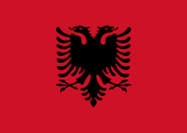 | 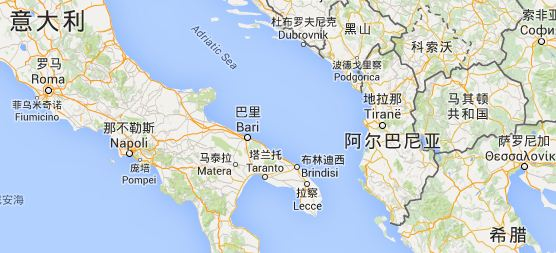
阿国人绝大多数为穆斯林，但并不十分虔诚。 |
| 2 | 阿尔及利亚 Algeria [æl'dӡiəriə] |
非洲DZA DZ |
the People's Democratic Republic of Algeria 阿尔及利亚人民民主共和国 信奉伊斯兰教(仅有1%的人信奉基督教和犹太教)。伊斯兰教“斋月”按教规规定从日出至日落的整整一天时间里，水米是不能沾的。 |
阿尔及尔 Alger [ældӡə]或 Algiers [æl'dӡiəz] |

国旗绿色象征未来的希望，白色代表纯洁与和平，红色象征革命和为理想而奋斗的献身精神。阿尔及利亚以伊斯兰教为国教，新月和五角星是这个穆斯林国家的象征。 |
 位于非洲北部。2,381,741平方公里; 位于非洲北部。2,381,741平方公里; |
| 3 | 阿富汗 Afghanistan [æf'gænistæn] |
亚洲 AFG AF |
the Islamic State of Afghanistan 阿富汗伊斯兰国 国旗黑色象征过去，红色象征鲜血，绿色象征未来,正中是国徽，由绶带束扎的谷穗构成圆形，中间为清真寺，上端为阿富汗国名，下端为：“万物非主，唯有真主，穆罕默德是安拉的使者”。整个图案由两个柄交叉的阿拉伯弯刀环抱，为金黄色。国徽的上部中央置有连着一个升起的太阳的萨哈达。 |
喀布尔 Kabul [kɔ:bl] [kə'bu:l] |
 |
 |
| 4 | 阿根廷 Argentina [͵ɑ:dӡən'ti:nə] |
南美洲 ARG AR |
the Argentine Republic ['ɑ:dӡəntain] 阿根廷共和国 “探戈”舞源于阿根廷，被阿根廷人视为阿根廷是一个移民国家，85%以上的居民来自于意大利和西班牙的后裔，国粹。 |
布宜诺斯艾利斯 Buenos Aires [bwenəs'aiəriz] 天主教 |
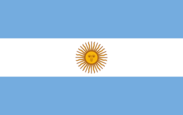
国旗中间是一轮“五月的太阳”。沿太阳本体圆周等距离分布着32根弯直相间的光芒线。浅蓝色象征正义，白色象征信念、纯洁、正直和高尚。“五月的太阳”象征自由和黎明。1810年阿根廷爆发了著名的五月革命，推翻了西班牙总督，开始了伟大的独立战争。 |
 |
| 5 | 阿拉酋 Arab Emirates ['emɪərət] |
亚洲 ARE AE |
the United Arab Emirates 阿拉伯联合酋长国 1971年3月1日，英国宣布同各酋长国签订的条约于年底终止。同年12月2日，阿拉伯联合酋长国宣告成立，由阿布扎比、迪拜、沙迦、富查伊拉、乌姆盖万和阿治曼6个酋长国组成联邦国家。1972年2月10日，哈伊马角加入联邦。 |
阿布扎比 Abu Dhabi [æbu: 'ðæbi:] |

国旗红色象征祖国，绿色象征牧场，白色象征祖国的成就，黑色象征战斗。 |
 |
| 6 | 阿曼 Oman [əu'mɑ:n] |
亚洲 OMN OM |
the Sultanate of Oman 阿曼苏丹国['sʌltənit] 国旗红色象征吉祥，白色象征和平与纯洁，绿色象征大地。左边的红带上印有国徽。国徽是两把带刀鞘刻有花纹的阿拉伯弯刀、一把带剑鞘的阿曼短剑以及宝剑佩带，整体象征人民不惜以武力捍卫国家主权和独立。 |
马斯喀特 Muscat [mʌskət] |
 |
 |
| 7 | 阿塞拜疆 Azerbaijan [͵ɑ:zəbai'dӡɑ:n] |
亚洲 AZE AZ |
the Republic of Azerbaijan 阿塞拜疆共和国 国旗蓝色是突厥人的传统颜色，红色象征短暂的生命、绿色象征伊斯兰教，星月表现了该国以伊斯兰教为主要信仰，其中的八角星是高加索地区特有的图案，象征八个不同的民族。 |
巴库 Baku [bɑ:'ku:] 伊斯兰教 |
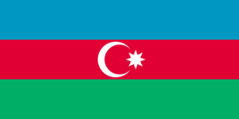 |  |
| 8 | 埃及 Egypt ['i:dӡɪpt] |
非洲 EGY EG |
the Arab Republic of Egypt 阿拉伯埃及共和国 在阿拉伯语中意为“辽阔的国家”。埃及又称为金字塔之国，棉花之国。埃及人（穆斯林皆如此）认为“右比左好”，右是吉祥的。 古埃及创造了人类历史上最早的太阳历。古埃及建筑与天文学密切相关。埃及共发现金字塔96座，最大的是开罗郊区吉萨的三座金字塔。金字塔是古埃及法老为自己修建的陵墓。 |
开罗 Cairo [kaiərəu] |
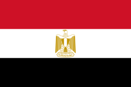
国旗红色象征革命，白色象征纯洁和光明前途，黑色象征埃及过去的黑暗岁月。国徽为一只金色的鹰，称萨拉丁雄鹰。金鹰昂首挺立、舒展双翼，象征胜利、勇敢和忠诚，它是埃及人民不畏烈日风暴、在高空自由飞翔的化身。 |
 |
| 9 | 埃塞俄比亚 Ethiopia [͵i:θi'əupjə] |
非洲 ETH ET |
the Federal Democratic Republic of Ethopia 埃塞俄比亚联邦民主共和国 国旗绿色代表肥沃的土地、温和的气候和丰富的植物资源，还象征对未来的希望；黄色象征和平与博爱，也代表人民建设国家的决心；红色象征人民为保卫祖国随时准备流血牺牲。国徽蓝色象征和平；五角星代表多样与统一，光芒象征繁荣、昌盛。 |
亚的斯亚贝巴 Addis Ababa [ædis 'æbəbə] |

国旗整体象征国家的希望和民族性，各宗教族群的平等和团结，和谐相处。 |
 |
| 10 | 爱尔兰 Ireland ['aiələnd] |
欧洲 IRL IE |
the Republic of Ireland 爱尔兰共和国 天主教为爱尔兰主要宗教，约占人口92%。爱尔兰是欧洲少有的几个虔诚信仰宗教的国家之一。 国旗绿色代表信仰天主教的爱尔兰人，也象征爱尔兰的绿色宝岛；橙色代表新教及其信徒，这一颜色还取意于奥伦治·拿骚宫的色彩，也表示尊贵和财富；白色象征天主教徒和新教派教徒之间永久休战、团结友爱，还象征对光明、自由、民主与和平的追求。 |
都柏林 Dublin [dʌblin] |
 |
 |
| 11 | 爱沙尼亚 Estonia [es'təunjə] |
欧洲 EST EE |
the Republic of Estonia 爱沙尼亚共和国 |
塔林 Tallinn tælin |
 |
 |
| 12 | 安道尔 Andorra [æn'dɔrə] |
欧洲 AND AD |
the Principality of Andorra 安道尔公国 属山地气候，年平均气温9.9℃。安道尔公国是位于西班牙和法国之间的内陆山国，高山峡谷遍布全境，全国平均海拔1100多米，是欧洲地势最高的国家。居民多信奉天主教。爱吃面食，面包的种类很多。 国徽左上角的白地上绘有一顶金色主教冠和一柄主教权杖，这是西班牙乌盖尔地方主教的标志；左下角的金地上有四道红色竖条，代表西班牙的加泰罗尼亚自治区， 它是安道尔风俗及语言的发源地；右下角的两头黄牛，是福伊克斯伯爵的继任人贝尔恩伯爵的纹徽；右上角的金地上有三道红色竖条，这是安道尔最初的保护人福伊克斯伯爵的纹徽。国徽底部写着安道尔人的箴言：“团结就是力量”。 |
安道尔城 Andorra La Vella |
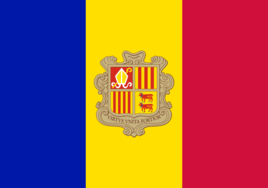 |  |
| 13 | 安哥拉 Angola [æŋ'gəulə] |
非洲 AGO AO |
the Republic of Angola 安哥拉共和国 49%的人信奉罗马天主教，13%的人信奉基督教新教，其余人口大多信奉原始宗教。 国旗中间是相互交叉的金色弧形齿轮和柴刀，象征着工农劳动者和军队的团结。红色代表了鲜血、民族自由斗争与国防。黑色表达了对“非洲大陆”的颂扬；五角星表示团结、国际主义和进步事业，五个角象征团结、自由、正义、民主与进步。 |
罗安达 Luanda [lu:'ɑ:ndə] |
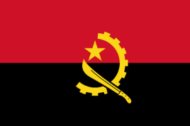 |  |
| 14 | 安提瓜和巴布达 Antigua and Barbuda [æn'ti:gə bɑ:`bu:də] |
北美洲 ATG AG |
为英联邦成员国,国旗中间绘有半轮金色的太阳。黑色象征这个岛国的人民。红色与“V”字形象征人民的力量和胜利。金色象征新时代的黎明，蓝色象征希望。黄蓝白三色连在一起象征岛国的丰富资源。 |
圣约翰 Saint [seint],[sənt] |
 |
 |
| 15 | 奥地利 Austria ['ɔstriə] |
欧洲 AUT AT |
the Republic of Austria 奥地利共和国 奥地利大公国时期的巴本堡公爵在与英王理查一世激战时，公爵的白色军衣几乎全被鲜血染红，只有佩剑处留下一道白痕。从此，公爵的军队采用红白红为战旗颜色。1786年约瑟夫二世把红白红旗作为全军战旗。 |
维也纳 Vienna [vi'enə] 是除纽约和日内瓦外，第三个联合国城市。也是欧洲古典音乐的摇篮，更是世界著名的音乐之都。 |
 |
 |
| 16 | 澳大利亚 Australia [ɔs'treiljə] |
大洋洲 AUS AU |
The Commonwealth of Australia 澳大利亚['kɔmənwelθ] 国旗的左上角为英国国旗图案，表明澳大利亚与英国的传统关系。一颗最大的七角星象征组成澳大利亚联邦的六个州和两个联邦领地（北领地和首都领地）。五颗小星代表南十字星座（是南天小星座之一，星座虽小，但明亮的星很多），表明该国处于南半球。 |
堪培拉 Canberra [kænbərə] |
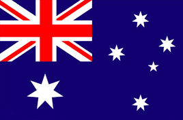 |  欧洲人在17世纪初发现这块大陆时，以为这是一块直通南极洲的陆地，故取名“澳大利亚”，Australia由拉丁文terraAustralis（南方的土地）变化而来。 |
| 17 | 巴巴多斯 Barbados> [bɑ:'beidəuz] |
北美洲 BRB BB |
国旗两侧的蓝色竖条分别代表着加勒比海和大西洋，中间的黄色竖条代表巴巴多斯的海滩。三叉戟象征希腊神话中的海神波塞冬，也象征民有，民享和民治。 |
布里奇顿 Bridgetown [bridӡtaun] |
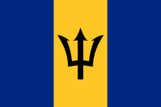 |  |
| 18 | 巴布亚新几内亚 Papua New Guinea ['pæpjuə'gini] |
大洋洲 PNG PG |
The Independent State of Papua New Guinea 巴布亚新几内亚独立国 国名由巴布亚和新几内亚两部分组成，得名于岛名。 国旗红色象征剽悍、勇敢；极乐鸟亦称天堂鸟，是巴布亚新几内亚特有的鸟，象征国家、民族独立和自由与幸福；黑色代表国家领土处于“黑人群岛”之中；五颗星的排列位置象征南十字星座（南天小星座之一，星座虽小，但明亮的星很多），表明该国地处南半球。 |
莫尔斯比港 Port Moresby [mɔ:zbi] |
 |
 |
| 19 | 巴哈马 Bahamas [bə'hɑ:məz] |
北美洲 BHS BS |
the Commonwealth of the Bahamas 巴哈马联邦 国名“Bajamar”一词在西班牙文中为“浅滩”。 国旗黑色三角形象征巴哈马人民团结一致，开发利用岛国的海陆资源；蓝色象征海洋环绕该岛国；黄色象征该岛国美丽的沙滩。 |
拿骚 Nassau [næsɔ:] |
 |
 |
| 20 | 巴基斯坦 Pakistan [͵pɑ:kis'tɑ:n] |
亚洲 PAK PK |
the Islamic Republic of Pakistan 巴基斯坦伊斯兰共和国 [iz`læmik] 国旗白色象征和平，代表国内信奉印度教、佛教、基督教、祆教的居民和其他少数民族；绿色象征繁荣，还代表伊斯兰教。新月象征进步，五角星象征光明；新月和五角星还象征对伊斯兰教的信仰。 |
伊斯兰堡 Islamabad [is'lɑ:məbɑ:d] |
 |
 |
| 21 | 巴拉圭 Paraguay ['pærəgwai] |
南美洲 PRY PY |
the Republic of Paraguay 巴拉圭共和国 国旗“五月之星”，纪念巴拉圭摆脱西班牙殖民统治，于1811年5月14日获得独立。“五月之星”由象征胜利的棕榈枝和象征和平的橄榄枝环绕，绿枝下端由国旗三色带系扎。绿枝环外圆面上半部为西班牙文“巴拉圭共和国”。 |
亚松森 Asuncion [ɑ:.su:n'sjɔ:n] |
 |
 |
| 22 | 巴勒斯坦 Palestine [pælistain] |
亚洲 |
the state of Palestine 巴勒斯坦国 由加沙Gaza[ˈɡɑ:zə]（现为哈马斯控制）和约旦河西岸两部分组成。加沙地区面积365平方公里，约旦河西岸地区面积5800平方公里。巴勒斯坦国是一个由居住在巴勒斯坦地区的约旦河西岸以色列占领区以及加沙地带的阿拉伯人所建立的国家。其中哈马斯占有加沙地带，而巴解则管治西岸，受巴民族权力机构监督。 |
耶路撒冷 Jerusalem [dӡe'ru:sələm] |
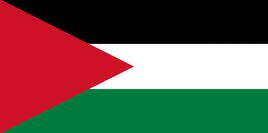
国旗红色象征革命，黑色象征勇敢和顽强，白色象征革命的纯洁性，绿色象征对伊斯兰教的信仰。 1980年7月30日，以色列国会通过法案宣布耶路撒冷是以色列“永恒的与不可分割的首都”，联合国安理会478号决议（14票赞成，0票反对，美国1票弃权）宣布这项法律无效，1988年，巴勒斯坦建国，定都耶路撒冷，包括中国在内的近100个国家予以承认。 |
 |
| 23 | 巴林 Bahrain [bɑ:'reɪn] |
亚洲 BHR BH |
the Kingdom of Bahrain 巴林王国 巴林，在阿拉伯语中意为“两股水源，两个海”。 |
麦纳麦 Manama [mæ'næmə] |
 |
 |
| 24 | 巴拿马 Panama [͵pænə'mɑ:] |
北美洲 PAN PN |
the Republic of Panama 巴拿马共和国 国旗白色象征和平；红色和蓝色分别代表原巴拿马的自由党和保守党，也是两党为民族的利益团结奋斗的象征。左上方的白底蓝星代表忠诚和廉洁，右下方白底红星代表法律的权威。十字线分隔成四块的设计方式，代表巴拿马位于南美洲、北美洲、大西洋、太平洋四个地域的交界处。红蓝白三色为沿用支持巴拿马独立的美国星条旗颜色。 |
巴拿马城 Panama city |
 |

巴拿马运河全长81.3千米，水深13米～15米不等，河宽152米至304米。整个运河的水位高出两大洋26米，设有6座船闸。船舶通过运河一般需要9个小时，可以通航76000吨级的轮船。 |
| 25 | 巴西 Brazil [brə'zil] |
南美洲 BRA BR |
the Federative Republic of Brazil 巴西联邦共和国 国名源于巴西红木BrazilwoodBrazilwood，brasil意为像炭火一样红。南美最大国家； 国旗菱形中央是深蓝色圆形天球仪。圆形白色绶带上，书以葡萄牙文“秩序与进步”。圆形上有白色五角星，象征国家的26个行政区。绿色和黄色是巴西的国色，绿色象征森林，黄色象征矿藏和资源。 |
巴西利亚 Brasilia [brə'zi:ljə] |
 |
 |
| 26 | 白俄罗斯 Belarus [͵belə'ru:s] |
欧洲 BLR BY |
the Republic of Belarus 白俄罗斯共和国 国旗红色代表击败侵略者的白俄罗斯军团之旗帜，象征光荣的过去。绿色代表森林与田地，象征欣欣向荣的大地与未来的希望。左边的花纹代表民族的传统文化与精神的延续，以及人民的团结一致。 |
明斯克 Minsk [minsk] |
 |
 |
| 27 | 保加利亚 Bulgaria [bʌl'gεəriə] |
欧洲 BGR BG |
the Republic of Bulgaria 保加利亚共和国 国旗白色象征人民热爱和平与自由，绿色象征农业和国家的主要财富，红色象征勇士的鲜血。 |
索非亚 Sofia [səufjə] |
 |
 |
| 28 | 贝宁 Benin [be'nin] |
非洲 BEN BJ |
the Republic of Benin 贝宁共和国 世界上只有三个国家有户籍制度，而贝宁就是其中之一，另外两个是中国和朝鲜。 国旗红黄绿三色是非洲人民喜爱的，被称为“泛非洲颜色”，象征非洲人的团结。红色象征土地或祖先的鲜血；黄色象征平原；绿色象征棕榈树。 |
波多诺夫 Porto-Novo |
 |
 |
| 29 | 比利时 Belgium ['beldӡəm] |
欧洲 BEL BE |
the Kingdom of Belgium 比利时王国 国旗黑色是庄重而具有纪念意义的色彩，表示悼念在1830年独立战争中牺牲的英雄；黄色象征国家的财富和畜牧业与农业的丰收；红色象征爱国者的生命和热血，还象征独立战争取得的伟大胜利 |
布鲁塞尔 Brussels [brʌslz] |
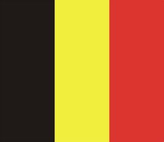 |  |
| 116 | 秘鲁 Peru [pə'ru:]， [pi'ru:] 在古印第安语中，秘鲁意为“玉米之仓”，因此地盛产玉米而得名。 |
南美洲 PER PE |
the Republic of Peru 秘鲁共和国 秘鲁国徽中心图案为盾徽。盾面左上方是一只南美骆马，为该国国兽，代表国家的动物资源，也是秘鲁民族的象征之一；右上方是一棵金鸡纳树，代表该国的植物资源；下半部为一只象征丰饶的羊角，代表该国的自然资源和矿藏。 |
利马 Lima [laimə] |
 国旗白色象征自由、民主、和平与幸福；红色象征人民在独立战争中取得的胜利，也表示人民对烈士的怀念。 |
 |
| 30 | 冰岛 Iceland ['aislənd] |
欧洲 ISL IS |
the Republic of Iceland 冰岛共和国 国旗红色象征冰岛火山中的火焰；白色象征覆盖冰岛的冰雪；蓝色则象征大西洋。 |
雷克亚未克 Reykjavik [reikjə͵vi:k] |
 |
 |
| 31 | 波多黎各 Puerto Rico [[ˈpwə:təuˈri:kəu]] |
北美洲 |
The Commonwealth of Puerto Rico 波多黎各自由邦 |
圣胡安 |
 |
 |
| 32 | 波黑 Bosnia and Herzegovina ['bɔzniə hεətsəgəu'vi:nə] “波斯尼亚”得名于“波斯尼亚河”，塞尔维亚语意为“寒冷”或“清澈”；黑塞哥维那”源自古高地德语，意为“公爵”。 |
欧洲 BIH BA] |
波斯尼亚-黑塞哥维那
国旗大三角形的三条边象征组成波斯尼亚和黑塞哥维那共和国的三个主要民族，即穆斯林族、塞尔维亚族和克罗地亚族。金色即太阳之光辉，象征着波黑人民心中充满希望。蓝底色和白色五角星象征着欧洲，标志着波黑是欧洲的一部分。 |
萨拉热窝 Sarajevo [͵særə'jeivəu] |
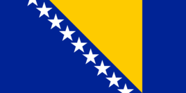 |  |
| 33 | 波兰 Poland ['pəulənd] |
欧洲 POL PL |
the Republic of Poland 波兰共和国 国旗白色不仅象征古老传说中的白鹰，而且还象征着纯洁，表达出波兰人民渴望自由、和平、民主、幸福的美好愿望；红色象征热血，也象征着革命斗争取得胜利。 |
华沙 Warsaw [wɔ:sɔ:] |
 |
 |
| 34 | 玻利维亚 Bolivia [bə'liviə] |
南美洲 BOL BO |
the Republic of Bolivia 玻利维亚共和国 国旗红色象征为国献身，黄色象征希望，绿色象征神圣国土。现则分别代表玻的动物，矿产和植物。 国名以美洲独立战争中的杰出领袖西蒙·玻利瓦尔的名字命名。 |
拉巴斯 La Paz [lɑ:'pæz] |
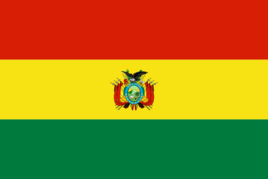 |  |
| 35 | 伯利兹 Belize [be'li:z] |
北美洲 BLZ BZ |
法文意为“航标”、“灯塔”， 国旗蓝色代表蓝天和海洋，红色象征胜利和阳光；50片绿叶构成的饰环表示纪念该国自1950年开始为争取独立而斗争并最终取得胜利。 |
贝尔莫潘 Belmopan [belməlpæn] |
 |
 |
| 36 | 博茨瓦纳 Botswana [bɔt'swɑ:nə] |
非洲 BWA BW |
the Republic of Botswana 博茨瓦纳共和国 意为“茨瓦纳人的土地”。 国旗黑色代表博茨瓦纳人口中的绝大部分黑人；白色代表白人等人口中的少数部分；蓝色象征蓝天和水。国旗的寓意是在非洲的蓝天下，黑人和白人团结、生活在一起。 |
哈伯罗内 Gaborone [͵gɑ:bə'rəun]， [hɑ:bɔ:rɔ:'ne] |
 |
 |
| 37 | 不丹 Bhutan [bu:'tɑ:n] |
亚洲 BTN BT |
the Kingdom of Bhutan 不丹王国 国旗金黄色象征国王的权力和作用；桔红色是僧侣长袍的颜色，象征佛教的精神力量；龙象征国家权力，又指这个国家的名字，因为不丹可译为“神龙之国”。龙爪上握有白珠，象征威力和圣洁。 |
廷布 Thimphu [`θɪmfu:], [-pu:], [θɪm`pu:] |
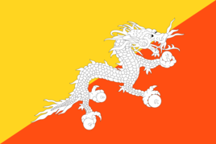 |  |
| 38 | 布基纳法索 Burkina Faso [bз:ki:nə 'fæsəu] |
非洲 BFA BF] |
the Burkina Faso
国旗红色象征革命，绿色象征农业、土地和希望；五角星象征革命向导，金黄色象征财富。 |
瓦加杜古 Ouagadougou |
 |
 |
| 39 | 布隆迪 Burundi [bu'rundi] |
非洲 BDI BD |
the Republic of Burundi 布隆迪共和国 国旗红色象征为争取自由而斗争牺牲者的鲜血，绿色象征所期望的进步事业，白色代表和平存在于人类中间。三颗星象征“团结、劳动、进步”，同时也代表布隆迪三个部族——胡图族、图西族、特瓦族，三族彼此和平相处共建家园。 |
布琼布拉 Bujumbura [͵bu:dӡəm'burə] |
 |
 |
| 40 | 朝鲜 North Korea [kə'rɪə] |
亚洲 PRK KP] |
the Democratic People's Republic of Korea 朝鲜民主主义人民共和国 国旗红色宽条象征崇高的爱国主义精神和顽强斗争的精神，白色象征朝鲜是一个单一的民族，蓝窄条象征团结、和平，红五角星象征革命传统。 |
平壤 Pyongyang ['pjɔŋ'jæŋ] |
 |
 |
| 41 | 赤道几内亚 Equatorial Guinea [͵ekwə'tɔ:riəl 'gini] |
非洲 GNQ GQ |
the Republic of Equatorial Guinea 赤道几内亚共和国 国旗绿色象征财富，白色象征和平，红色象征为独立而斗争的精神，蓝色象征海洋。 |
马拉博 Malabo [mɑ:lɑ:bəu] |
 |
 |
| 42 | 丹麦 Denmark ['denmɑ:k] |
欧洲 DNK DK |
the Kingdom of Denmark 丹麦王国 丹麦是最早将基督教十字架画入国旗的国家 |
哥本哈根 Copenhagen [͵kəupən'heigən] |
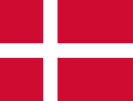 |  |
| 43 | 德国 Germany ['dӡə:məni] |
欧洲 DEU DE |
the Federal Republic of Germany 德意志联邦共和国 |
柏林 Berlin [bə:'lin] |
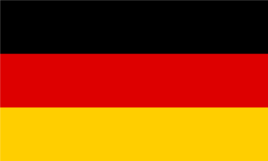 |  |
| 44 | 东帝汶 East Timor [ti:mɔ:] |
亚洲 |
the Democratic Republic of East Timor 东帝汶 国旗红色代表东帝汶人民争取独立自由的斗争，黑色的三角形代表必须击倒反启蒙主义，黄色的三角形代表东帝汶曾被葡萄牙、印尼等国殖民统治过的痕迹，中心有一颗稍微向左倾斜的小星星，代表引导着独立自由的光芒。 |
帝力 Dili [`dili] |
 |
|
| 45 | 多哥 Togo ['təugəu] |
非洲 TGO TG |
the Togolese Republic 多哥共和国 国旗绿色代表农业，又象征希望；黄色象征国家的矿藏，还表示人民的信心和对祖国命运的关心；红色象征人类的真诚、博爱与献身精神；白色象征纯洁；五角星象征国家的独立和人民新生。 |
洛美 Lome [͵lɔ: 'mei] |
 |
 |
| 46 | 多米尼加 Dominican [də'minikən] |
北美洲 DOM DO |
the Dominican Republic 多米尼加共和国 国名意为“星期天、休息日”。红色象征国家创建者为争取自由、独立而进行的火与血的艰苦斗争，还象征奋斗者的鲜血；蓝色象征自由；白色十字代表宗教信仰，也象征人民的奋斗和牺牲。中心图案为盾徽。 |
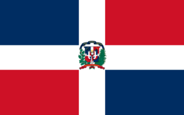 |  |
|
| 47 | 多米尼克 Dominica [͵dɔmi'ni:kə] |
北美洲 DMA DM |
the Commonwealth of Dominica 多米尼加联邦 国旗绿色象征遍及全岛的香蕉园和茂密的森林，黄色代表柠檬、柑橘、可可、椰子等种植业，白色象征河流、瀑布和人民的纯洁，黑色代表当地主要为黑人和黑白混血种人及肥沃的土地。十字形代表人民的宗教信仰——天主教。红色圆地象征该国所执行的社会发展计划，10颗五角星代表该国的10个地区。 |
罗索 Roseau [rəʊ`zəʊ] |
 |
 |
| 48 | 俄罗斯 Russia ['rʌ∫ə] |
欧洲 RUS RU |
the Russian Federation[͵fedə'rei∫ən] 俄罗斯联邦 国旗白色代表寒带一年四季的白雪茫茫，蓝色代表亚寒带，又象征俄罗斯丰富的地下矿藏和森林、水力等自然资源，红色是温带的标志，也象征俄罗斯历史的悠久和对人类文明的贡献。三色的排列显示了俄罗斯幅员的辽阔。但另一方面，白色又是真理的象征，蓝色代表了纯洁与忠诚，红色则是美好和勇敢的标志。 |
莫斯科 Moscow [mɔskəu] |
 |
 |
| 49 | 厄瓜多尔 Ecuador [͵ekwə'dɔ:] “香蕉之国” |
南美洲 ECU EC |
the Republic of Ecuador 厄瓜多尔共和国 西班牙语意为“赤道”。别称有“赤道之国”、“香蕉之国”。 国旗黄色象征国家的财富，阳光和粮食；蓝色象征蓝天，海洋和波澜壮阔的亚马孙河；红色象征为自由和正义而战的爱国者的鲜血。 |
基多 Quito [ki:təu] |
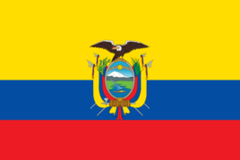 |  |
| 50 | 厄立特里亚 Eritrea [͵eri'tri(:)ə] |
非洲 ERI ER |
The State of Eritrea 厄立特里亚国 国旗红色象征为争取独立解放而斗争，绿色象征农业和畜牧业，蓝色象征国家丰富的海洋资源和财富，黄色象征矿产资源，橄榄枝象征和平。 |
阿斯马拉 Asmara [æz'mɑ:rə] |
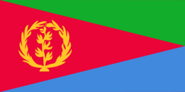 |  |
| 51 | 法国 France [frɑ:ns] |
欧洲 FRA FR |
the French Republic 法兰西共和国 三色旗上的蓝色是自由的象征，白色是平等的象征，而红色代表了博爱，正如法国人民“自由、平等、博爱”[5] （法语："Liberté, égalité, fraternité"）的宣言。 |
巴黎 Paris [pæris] |
 |
 |
| 52 | 梵蒂冈 Vatican ['vætikən] |
欧洲 VAT VA |
梵蒂冈在拉丁语中意为“先知之地”。 国旗白色上还绘有教宗的牧徽：两把交叉的圣彼得的钥匙和一顶教宗的三重冕。 |
梵蒂冈城 Vatican ['vætikən] |
 |
 0.44平方公里;428人； |
| 53 | 菲律宾 Philippines ['filipi:nz]， [-painz] |
亚洲 PHL PH |
the Republic of the Philippines 菲律宾共和国 国旗上太阳和光芒图案象征自由；八道较长的光束代表最初起义争取民族解放和独立的八个省，其余光芒表示其他省。三颗五角星代表菲律宾的三大地区：吕宋、萨马和棉兰老岛。蓝色象征忠诚、正直、红色象征勇气，白色象征和平和纯洁。 |
马尼拉 Manila [mə'nilə] |
 |
 |
| 54 | 斐济 Fiji [fi:'dӡi:], ['fi:dӡi:] |
大洋洲 FJI FJ |
the Republic of the Fiji Islands 斐济群岛共和国 国旗浅蓝色象征海洋和天空，也表明该国有丰富的水产资源；“米”字图案为英国国旗图案，是英联邦国家的标志，表明斐济与英国的传统关系。饰带上用斐济语书写着“敬畏上帝，尊崇国王”。 |
苏瓦 Suva [su:və] |
 |
 |
| 55 | 芬兰 Finland ['finlənd] |
欧洲 FIN FI |
the Republic of Finland 芬兰共和国 国名的含义为湖沼之国。旗上的白色象征白雪覆盖着的国土。 |
赫尔辛基 Helsinki [helsiŋki] |
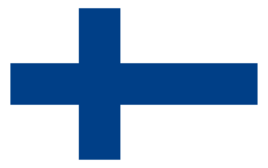 |  |
| 56 | 佛得角 Cape Verde [keɪp vз:d] |
非洲 CPV CV |
the Republic of Cape Verde 佛得角共和国 国旗蓝色象征海洋和天空，白色象征希望和平，红色象征人民的努力，条带象征佛得角人民用勤劳的双手建设国家的道路，五角星圆环象征佛得角民族及其团结。 |
普拉亚 Praia [praiɑ:] |
 |
 |
| 57 | 冈比亚 Gambia ['gæmbiə] |
非洲 GMB GM |
the Republic of the Gambia 冈比亚共和国 国旗红色象征太阳和草原；蓝色象征爱与忠诚，还代表横贯全国东西的冈比亚河；绿色象征宽容，也象征土地和森林； |
班珠尔 Banjul [bændӡu:l] |
 |
 |
| 58 | 刚果 Congo ['kɔŋgəu] |
非洲 COG CG |
the Republic of the Congo 刚果共和国 国名源于刚果河。当地土语意为“大河”。 国旗绿色象征森林资源及对未来的希望；黄色象征丰富的资源和无尽的财富，也代表诚实、宽容和自尊；红色代表热情和刚果人民为非洲的自由和独立洒在这片光荣的土地上的热血。 |
布拉柴维尔 Brazzaville [bræzəvil] |
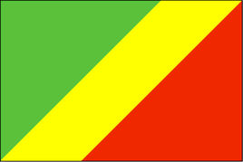 |  |
| 59 | 刚果(金) Democratic Republic of the Congo |
非洲 COD CD |
the Democratic Republic of the Congo 刚果民主共和国 (曾名：扎伊尔 Zaire[zə'i:rə]） 国旗浅蓝色象征和平。左上角的星星代表了光明的未来。一道黄红黄的带子从左下角到右上角把旗帜划开。黄色代表丰富的资源，而红色代表了为国捐躯者的血。 |
金沙萨 Kinshasa [kin'∫ɑ:sə] |
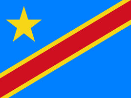 | .jpg) |
| 60 | 哥伦比亚 Colombia [kə'lɔmbiə] |
南美洲 COL CO |
the Republic of Colombia 哥伦比亚共和国 国旗黄色象征金色的阳光、谷物和丰富的自然资源；蓝色代表蓝天、海洋和河流；红色象征爱国者为争取国家独立和民族解放而洒下的鲜血。 |
波哥大 Bogota [bəugə'ta] |
 |
 |
| 61 | 哥斯达黎加 Costa Rica ['kɔstə'ri:kə] |
北美洲 CRI CR |
the Republic of Costa Rica 哥斯达黎加共和国 是世界上较大的不设军队的国家，在西班牙语中意为“富饶的海岸”。 国旗蓝、白两色来自原中美洲联邦国旗的颜色，红色部分是1848年建立共和国时增加的。蓝色代表天空、机会、理想主义和坚忍；红色代表热忱和为独立所流的血；白色代表和平、智慧和快乐。 |
圣何塞 San Jose [sɑ:n həu'zei] |
 |
 |
| 62 | 格林纳达 Grenada [grə'neidə] |
北美洲 GRD GD |
国旗红色象征全国人民的友爱精神，绿色象征该岛国的农业和丰富的植物资源，黄色象征该国有充足的阳光。七颗五角星代表全国的七个教区，该国居民大多数信奉天主教；肉豆蔻图案表示该国的特产。 |
圣乔治 St. George's |
 |
 |
| 63 | 格鲁吉亚 Georgia ['dӡɔ:dӡjə] |
亚洲 GEO GE |
国名源于民族名，在希腊语中，其意为“田园”或“农业”。 |
第比利斯 Tbilisi [tə'bilisi]， [tbili:'si:] |
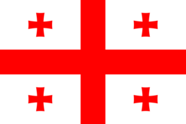 |  |
| 64 | 古巴 Cuba ['kju:bə] |
北美洲 CUB CU |
the Republic of Cuba 古巴共和国 国名源自泰诺语“coabana”，意为“肥沃之地”、“好地方”。古巴是现存世界为数不多的5个社会主义国家（中国、朝鲜、古巴、越南、老挝）之一. 国旗上的三角形和星原是古巴秘密革命组织的标志，象征自由、平等、博爱和爱国者的鲜血。五角星还代表古巴是一个独立的民族。三道蓝色宽条表示未来的共和国将分成东、西、中三个州；白条表示古巴人民在独立战争中怀着纯洁的目的。 |
哈瓦那 Havana [hə'vænə] |
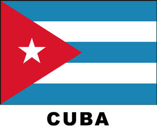 |  |
| 65 | 圭亚那 Guyana [gai'ɑ:nə,gai'ænə] |
南美洲 GUY GY |
the Republic of Guyana 圭亚那共和国 印第安语意为“多水之乡”。 国旗绿色代表该国的农业和林业等自然资源，白色象征河流和水源，黄色象征矿藏和财富，黑色象征人民勇往直前和坚韧不拔的精神，红色象征人民建设祖国的热情和力量，三角形箭头象征国家前进的步伐。 |
乔治敦 Georgetown [dӡɔ:dӡtaun] |
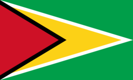 |  |
| 66 | 哈萨克斯坦 Kazakhstan [͵kɑ:zɑ:k'stɑ:n] |
亚洲 KAZ KZ |
the Republic of Kazakhstan 哈萨克斯坦共和国 旗地为浅蓝色，旗面中间是一轮金色的太阳，太阳放射出32道光芒，其下有一只展翅飞翔的雄鹰。靠旗杆一侧有一垂直竖条，为哈萨克传统的金色花纹图案。浅蓝色是哈萨克人民喜爱的传统颜色，代表天空，也象征康乐、和平、宁静； |
阿斯塔纳 Astana [ə'stɑ:nə] |
 |
 世界上最大的内陆国。至今哈萨克斯坦的民族和文化属于突厥文化、伊斯兰文化和斯拉夫文化的结合体。哈萨克一词在突厥语中的解释是“游牧战神”. |
| 67 | 海地 Haiti ['heiti] |
北美洲 HTI HT |
the Republic of Haiti 海地共和国 印第安语意为“多山的地方”。海地国旗的颜色源于法国国旗。国徽中间高耸着一棵棕榈树，树上插着一根“自由之竿”，竿顶是“自由之帽”。树前的绿地上有一面战鼓，两旁为战斧、大炮等武器；树两侧各有三面海地国旗和一面三角旗；树后有六支带刺刀的步枪。白色饰带上用法文写着“团结就是力量”。 |
太子港 Port-au-Prince [͵pɔ:təu'prins] |
 |
 |
| 68 | 韩国 Korea 英文名Korea源于古名“高丽”。 |
亚洲 KOR KR |
(the) Republic of Korea
国旗白地代表土地，中间为太极两仪，四角有黑色四卦。太极的圆代表人民，圆内上下弯鱼形两仪，上红下蓝，分别代表阳和阴，象征宇宙。四卦中，左上角的乾即三条阳爻代表天、春、东、仁；右下角的坤即六条阴爻代表地、夏、西、义；右上角的坎即四条阴爻夹一条阳爻代表水、秋、南、礼；左下角的离即两条阳爻夹两条阴爻代表火、冬、北、智。整体图案意味着一切都在一个无限的范围内永恒运动、均衡和协调，象征东方思想、哲理和神秘。 |
首尔 Seoul [səul] |
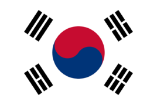 |  |
| 69 | 荷兰 Netherlands ['neðələndz] (=Holland |
欧洲 NLD NL |
the Kingdom of the Netherlands 荷兰王国(尼德兰王国) 与英国或法国不同，这个名称并不是起源于民族名称，而是由地名转化而来。 |
阿姆斯特丹 Amsterdam [æmstə'dæm] |
 |
 |
| 70 | 黑山 Montenegro [͵mɔnti'ni:grəu] |
欧洲 |
国旗蓝色表示国家面临海洋，象征人民的幸福；白色象征自由、平等、民主。还代表人民纯朴的性格特征；红色代表革命胜利。国旗四边镶有金边，中央为“双头鹰”。鹰胸前的金狮子是黑山古王朝的象征。 |
波德戈里察 Podgorica [`pɔ:dgɔ:͵ri:tsɑ:] |
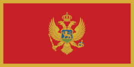 |  |
| 71 | 洪都拉斯 Honduras [hɔn'djuərəs] |
北美洲 HND HN |
the Republic of Honduras 洪都拉斯共和国 国旗颜色来自原中美洲联邦国旗的颜色。上下蓝色宽条分别象征太平洋和加勒比海；白色象征对和平的追求；五颗五角星是1866年添加的，表达了组成中美洲联邦的五个国家能再次实现联合的愿望。 |
特古巴加尔巴 Tegucigalpa [tə͵gu:si'gælpə] |
 |
 |
| 72 | 基里巴斯 Kiribati ['kɪrɪbæs] |
大洋洲 KIR KI |
the Republic of Kiribati 基里巴斯共和国 拥有世界最大海洋保护区。世界上唯一地跨赤道而又横过国际日期变更线交叉点上的国家。 国旗红色象征大地；蓝白波纹象征太平洋；太阳象征赤道的阳光，表明该国位于赤道地带，也象征光明和未来的希望；军舰鸟象征力量、自由和基里巴斯的文化。 |
塔拉瓦 Tarawa [tɑ:'rɑ:wɑ:] |
 |
 |
| 73 | 吉布提 Djibouti [dӡi'bu:ti] |
非洲 DJI DJ |
the Republic of Djibouti 吉布提共和国 阿法尔语意为“沸腾的蒸锅”. 国旗天蓝色代表海洋和天空，绿色象征土地和希望，白色象征和平，红五角星代表人民的希望和斗争的方向。整个国旗图案的中心思想是“团结、平等、和平”。 |
吉布提市 Djibouti |
 |
 |
| 74 | 吉尔吉斯斯坦 Kyrgyzstan ['kɪəgi:͵stɑ:n], [͵kɪəgi:'stɑ:n] |
亚洲 KGZ KG |
the Kyrgyz Republic 吉尔吉斯斯坦；吉尔吉斯共和国 旗地为红色。中间是姑娘的四十条发辫环绕着毡房的顶。红色象征胜利。 |
比什凯克 Bishkek [biʃkek], ['bi:ʃ-] |
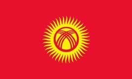 |  |
| 75 | 几内亚 Guinea ['gini] |
非洲 GIN GN |
the Republic of Guinea 几内亚共和国 几内亚，来源于柏柏尔语，意为“黑人的国家”. 国旗红色象征为自由而斗争烈士的鲜血，还象征劳动者为建设祖国而作出的牺牲；黄色代表国家的黄金，也象征普照全国的阳光；绿色象征该国植物。另外，红、黄、绿三色也是泛非颜色，几内亚人视之为“勤劳、正义、团结一致”的标志。 |
科纳克里 Conakry [kɔnəkri] |
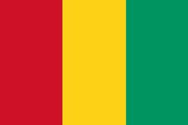 |  |
| 76 | 几内亚比绍 Guinea Bissau ['ginibi'səu] |
非洲 GNB GW |
the Republic of Guinea-Bissau 几内亚比绍共和国 国旗红色象征为民族独立而斗争的战士的鲜血；黄色象征国家的财富、丰收和人民的希望；绿色象征农业；黑色五角星象征国家的执政党——几内亚和佛得角非洲独立党，还象征非洲黑人的尊严、自由与和平。 |
比绍 Bissau [bis'auŋ] |
 |
 |
| 77 | 加拿大 Canada ['kænədə] |
北美洲 CAN CA |
国旗两边的红色代表大西洋和太平洋，白色正方形象征加拿大广阔的国土。中央绘有一片11个角的红色枫树叶，11个角代表着加拿大的7个省和4个自治州。枫树是加拿大的国树，也是加拿大民族的象征。 |
渥太华 Ottawa [ɔtəwə] |
 |
 |
| 78 | 加纳 Ghana ['gɑ:nə] |
非洲 GHA GH |
the Republic of Ghana 加纳共和国 独立前称“黄金海岸”。加纳被称为“可可之乡”，据说全世界每6块巧克力中，就有一块原料来自加纳。 国旗红色象征为了国家独立而牺牲烈士的鲜血；黄色象征国家丰富的矿藏和资源；也代表加纳原来的国名“黄金海岸”；绿色象征森林和农业；黑色五角星象征非洲自由的北极星。 |
阿克拉 Accra [ə'krɑ:] |
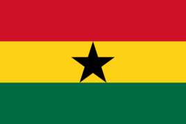 |  |
| 79 | 加蓬 Gabon [gæ'bɔn] |
非洲 GAB GA |
the Gabonese Republic 加蓬共和国 国旗绿色象征丰富的森林资源，加蓬号称“木材之国”、“绿金之国”；黄色象征阳光黄色也代表丰富的矿产资源；蓝色象征海洋。 |
利伯维尔 Libreville [͵li:brə'vi:l] |
 |
 |
| 80 | 柬埔寨 Cambodia [kæm'bəudiə] |
亚洲 KHM KH |
the Kingdom of Cambodia 柬埔寨王国 旧称高棉，红色代表民族，国旗白色代表佛教，蓝色象征王室，符合柬国的国家铭言“民族、宗教、国王”。正中间白色殿堂为吴哥窟， |
金边 Phnom Penh [pə'nɔm'pen] |
 |
 |
| 81 | 捷克 Czech [t∫ek] |
欧洲 CZE CZ |
the Czech Republic
国旗白色代表神圣和纯洁，象征着人民对和平与光明的追求；红色象征勇敢和不畏困难的精神，象征人民为国家的独立解放和繁荣富强而奉献的鲜血与取得的胜利。蓝色来自原来的摩拉维亚和斯洛伐克省徽章的颜色。 |
布拉格 Prague [prɑ:g] |
 |
 |
| 82 | 津巴布韦 Zimbabwe [zim'bɑ:bwei] |
非洲 ZWE ZW |
the Republic of Zimbabwe 津巴布韦共和国 津巴布韦在班图语中意为“石头城”，国旗白色象征和平，五角星代表国家和民族的良好愿望，津巴布韦鸟是该国特有的标志，也是津巴布韦和非洲国家古老文明的象征；右侧为七道平行横条，黑色居中，向上下两边依次均为红、黄、绿色。 |
哈拉雷 Harare [hə'rɑ:rei] |
 |
 |
| 83 | 喀麦隆 Cameroon ['kæməru:n] |
非洲 CMR CM |
the Republic of Cameroon 喀麦隆共和国 有“小非洲”之称，国旗绿色象征南部赤道雨林的热带植物，还象征人民对幸福未来的希望；黄色象征北部草原和矿产资源，也象征给人民带来幸福的太阳光辉；红色象征联合统一的力量。五角星象征国家的统一。 |
雅温得 Yaounde [͵jɑ:un'dei] |
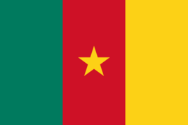 |  |
| 84 | 卡塔尔 Qatar ['kɑ:tər] (=katar) |
亚洲 QAT QA |
the State of Qatar 卡塔尔国 国旗白色代表和平，栗色代表历史上战争。九个锯齿代表在1916年与英国签署的保护协约（卡塔尔是该区签署该种协约的第九个国家）。 |
多哈 Doha [dəuhə] |
 |
 |
| 85 | 科摩罗 Comoros ['kɔmərəus] |
非洲 COM KM |
Union of Comoros 科摩罗联盟 国旗绿色与新月象征穆斯林国家，也代表国名为“月亮群岛”之意；四颗五角星以及四横条都是代表组成国家的四大岛：黄色代表莫埃利岛，白色代表马约特岛，红色代表昂儒昂岛，蓝色代表大科摩罗岛。绿色与新月象征穆斯林国家，也代表国名为“月亮群岛”之意；四颗五角星代表组成国家的莫埃利、马约特、昂儒昂、大科摩罗四大岛。环绕的文字是法文与阿拉伯文国名“科摩罗伊斯兰联邦共和国”；底部的文字为“团结、正义、进步”。 |
莫罗尼 Moroni [mə'rɔni] |
 |
 |
| 86 | 科索沃 Kosovo /ˈkɒsəvoʊ/ |
欧洲 |
The Republic of Kosovo
科索沃于2008年2月17日通过独立宣言，宣布脱离塞尔维亚，现时获得了108个国家的承认。塞尔维亚政府已经宣布绝不放弃科索沃的主权， 国旗为蓝色背景，下方是金色的科索沃版图，上方是六颗白色星，代表着科索沃的民族多样性以及其对欧洲和欧盟的渴望。 |
普里什蒂纳 |  |
 |
| 87 | 科特迪瓦 Cote d'Ivoire [kəʊt] |
非洲 CIV CI |
the Republic of Cote d'Ivoire 科特迪瓦共和国 (旧译“象牙海岸”） 国旗橙色代表北部的热带大草原，也象征国家的繁荣富强与人民的爱国精神；白色象征南、北方的和平团结的希望；绿色代表南部地区的原始森林中丰富的自然资源。橙、白、绿三色还分别解释为：民族爱国精神、和平与纯洁、对未来的希望。 |
亚穆苏克罗 Yamoussoukro [͵jɑ:mu:`su:krəʊ] |
 |
 |
| 88 | 科威特 Kuwait [ku'weit] |
亚洲 KWT KW |
the State of Kuwait 科威特国 国旗黑色象征打败敌人，绿色代表绿洲，白色代表纯洁，红色象征为祖国流血。还有另一种说法为，黑色象征战场，红色象征未来。 |
科威特城 Kuwait City |
 |
 |
| 89 | 克罗地亚 Croatia [krəu'ei∫jə] |
欧洲 HRN HR |
the Republic of Croatia 克罗地亚共和国 在拉丁语里，罗马尼亚是“罗马人的国家”的意思。国旗蓝色象征蓝天，黄色象征丰富的自然资源，红色象征人民的勇敢和牺牲精神。在民族色彩上，蓝色象征特兰西瓦尼亚、黄色象征瓦拉几亚，红色象征摩尔多瓦。1994年7月16日启用。 罗马尼亚国旗与乍得国旗完全相同。也是世界上唯一的一对完全相同的国旗。 |
萨格勒布 Zagreb [zɑ:greb] |
 |
 |
| 90 | 肯尼亚 Kenya ['ki:njə], ['kenjə] |
非洲 KEN KE |
the Republic of Kenya 肯尼亚共和国 国旗黑色象征肯尼亚人民，红色象征为自由而斗争，绿色象征农业和自然资源，白色象征统一与和平；矛和盾图案象征祖国统一和为捍卫自由而斗争。 |
内罗毕 Nairobi [͵naiə'rəubi] |
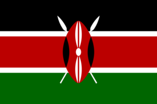 |  |
| 91 | 库克群岛 Cook Islands [kuk] |
非联合国会员国 COK CK |
the Cook Islands 库克群岛 其命名起源于远征探索南太平洋，发现了许多岛屿的詹姆斯·库克船长。国旗蓝色代表太平洋以及该群岛人民热爱和平的天性。左上角是英国国旗，表明库克群岛与英国的历史联系及为英联邦成员。右侧是15颗五角星组成的圆环。15颗星代表群岛的15个岛屿。 |
阿瓦鲁阿 Avarua [͵ɑ:və'ruə] |
 |
 |
| 92 | 拉脱维亚 Latvia ['lætviə] |
欧洲 LVA LV |
the Republic of Latvia 拉脱维亚共和国 国旗暗红色讴歌了拉脱维亚人为了祖国勇于披肝沥胆、抛洒热血的爱国情怀，白色抒发了拉脱维亚人对和平、安宁的向往和渴望。 |
里加 Riga [ri:gə] |
 |
 |
| 93 | 莱索托 Lesotho [li'su:tu:] |
非洲 LSO LS |
the Kingdom of Lesotho 莱索托王国 “说索托语的人们”，世界最大的国中之国。 国旗蓝色代表雨水也代表了海洋，白色象征和平与纯洁，绿色是雨水孕育出蕴藏着丰富的资源与茂盛草木的大地；这三色即是莱索托的国家铭言“和平、雨水、繁荣”的化身。中间有一顶黑色巴索托帽。 |
马塞卢 Maseru [mæzəru:] |
 |
 |
| 94 | 老挝 Laos ['lauz] |
亚洲 LAO LA |
the Lao People's Democratic Republic 老挝人民民主共和国 国旗蓝色象征一片富饶美丽的国土，表示人民热爱和平安宁的生活。红色象征革命，表明不惜以鲜血为代价捍卫国家尊严。白色圆形象征老挝人民在党的领导下团结一致以及国家光明的未来。白色圆形也代表满月，置于蓝条之上，象征皎洁明月高悬于湄公河的上空。 |
万象 Vientiane [vjen'tjæn] |
 |
 |
| 95 | 黎巴嫩 Lebanon ['lebənən] |
亚洲 LBN LB |
the Republic of Lebanon 黎巴嫩共和国 国旗红色象征自我牺牲，白色象征和平，雪松（在《圣经》中被称为植物之王）代表挺拔强劲的力量、纯洁和永生。 |
贝鲁特 Beirut [bei'ru:t] |
 |
 |
| 96 | 立陶宛 Lithuania [͵liθju(:)'einjə], [-niə] |
欧洲 LTU LT |
the Republic of Lithuania 立陶宛共和国 国名源于波兰语，意为“多雨水的国家”。 |
维尔纽斯 Vilnius [`vilniʊs], [-əs] |
 |
 |
| 97 | 利比里亚 Liberia [lai'biəriə] |
非洲 LBR LR |
the Republic of Liberia 利比里亚共和国 19世纪初，一些美国黑奴解放后有计划地移居到现在被称作利比里亚的地区，所以国名在英文有“自由”（liberty）和“解放”（liberated）的意思。 国旗11道红白条纹是纪念利比里亚独立宣言的11个签字者。红色象征勇气，白色象征美德，蓝色象征非洲大陆，正方形表达利比里亚人民渴望自由、和平、民主和博爱的美好愿望；五角星象征当时非洲唯一的黑人共和国。 |
蒙罗维亚 Monrovia [mən'rəuviə] |
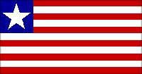 |  |
| 98 | 利比亚 Libya ['libiə] |
非洲 LBY LY |
the Great Socialist People's Libyan Arab Jamahiriya 阿拉伯利比亚民众国；大 阿拉伯利比亚人民社会主义民众国 国名源于希腊语，意为“白种人居住的地方”。国旗中间黑色带子代表昔兰尼加地区，红色带子代表费赞地区，亦象征人民的鲜血；而绿色带子代表的黎波里塔尼亚地区和伊斯兰教，亦是繁荣的象征。 |
的黎波里 Tripoli [tripəli] |
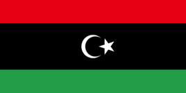 |  |
| 99 | 列支敦士登 Liechtenstein ['liktən͵stain] |
欧洲 LIE LI |
the Principality of Liechtenstein 列支敦士登公国 [͵prinsi'pæliti] 为世界上仅有的两个双重内陆国之一。国旗蓝色象征蓝天，红色象征夜晚地面之火。旗面上的王冠是神圣罗马帝国之王冠，这是1937年添加的，以便与海地国旗区别。 |
瓦杜兹 Vaduz [fɑ:'du:ts] |
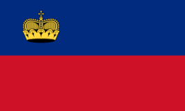 |  |
| 100 | 卢森堡 Luxembourg ['luksəm͵bə:g] |
欧洲 LUX LU |
the Grand Duchy of Luxembourg 卢森堡大公国['dʌt∫i] 在古高德语中意为小城堡。Lutzel是小的意思。 国旗红色象征着热烈和勇敢的国民性格，还象征在争取国家独立和民族解放斗争中牺牲烈士的鲜血；白色象征人民的纯朴和对和平的追求；蓝色代表蓝天，意味着人民获得了光明和幸福。三色联在一起又象征平等、民主和自由。 |
卢森堡 Luxembourg |
 |
 |
| 101 | 卢旺达 Rwanda [ru'ændə] |
非洲 RWA RW |
the Rwandese Republic 卢旺达共和国 有“千丘之国”的称谓。国旗为蓝黄绿三色旗。蓝色代表人民必须为和平而战方能使经济持续成长并带来快乐生活；黄色代表人民必须安居乐业以促进永久的经济发展；绿色象征藉由人民合理的开发达到繁荣的希望，也象征国家的资源。右上方有一二十四道光芒的太阳标志，二十四道光芒指引著全国人民，表示团结一致、纯真透明，与对抗无知的奋斗。 |
基加利 Kigali [ki'gɑ:li] |
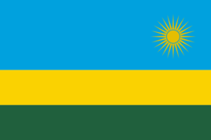 |  |
| 102 | 罗马尼亚 Romania [rəu'meinjə] |
欧洲 ROM RO |
罗马尼亚是“罗马人的国家”的意思。 国旗蓝色象征蓝天，黄色象征丰富的自然资源，红色象征人民的勇敢和牺牲精神。在民族色彩上，蓝色象征特兰西瓦尼亚、黄色象征瓦拉几亚，红色象征摩尔多瓦。1994年7月16日启用。 罗马尼亚国旗与乍得国旗完全相同。也是世界上唯一的一对完全相同的国旗。 |
布加勒斯特 Bucharest [bju:kərest] |
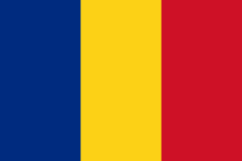 |  |
| 103 | 马达加斯加 Madagascar [mædə'gæskə] |
非洲 MDG MG |
the Republic of Madagascar 马达加斯加共和国 国旗白色象征纯洁，红色象征主权，绿色象征希望。 |
安塔那利佛 Antananarivo [͵æntə͵nænə'ri:vəʊ], [͵ɑ:ntə͵nɑ:nə-] |
 |
 |
| 104 | 马尔代夫 Maldives ['mɔ:ldaivz], ['mæl-] |
亚洲 MDV MV |
the Republic of Maldives 马尔代夫共和国 亚洲最小国家. 国旗红色象征为国家主权和独立而献身的民族英雄的鲜血；绿色意味着生命、进步和繁荣；白色新月表示和平、安宁和马尔代夫人民对伊斯兰教的信仰。 |
马累 Male [mɑ:lei] |
 |
 |
| 105 | 马耳他 Malta ['mɔ:ltə] |
欧洲 MLT MT |
the Republic of Malta 马耳他共和国 国旗左上角有一镶着红边的银灰色乔治十字勋章图案。白色象征纯洁，红色象征勇士的鲜血。 |
瓦莱塔 Valletta [və'letə] |
 |
 |
| 106 | 马拉维 Malawi [mɑ:'lɑ:wi] |
非洲 MWI MW |
the Republic of Malawi 马拉维共和国 旗面上方中间为一轮冉冉升起的太阳，放射31道光芒，黑色象征黑人，红色象征为争取自由独立而战斗的烈士鲜血，绿色代表该国的美丽国土和绿色景物，太阳图案象征非洲人民争取自由的希望。 |
利隆圭 Lilongwe [lilɔ:ŋkwi] |
 |
 |
| 107 | 马来西亚 Malaysia [mə'lei∫ə], [mə'leiziə] |
亚洲 MYS MY |
国旗左上角为蓝底加上黄色的新月及十四芒星图案。上有一弯黄色新月和一颗14个尖角的黄色星。14道红白横条和14角星原代表全国14个州。蓝色象征人民的团结及马来西亚与英联邦的关系─英国国旗以蓝色为旗底，黄色象征皇室，红色象征勇敢，白色象征纯洁，新月象征马来西亚的国教伊斯兰教。 |
吉隆坡 Kuala Lumpur [kwɑ:lə 'lumpuə] |
 |
 |
| 108 | 马里 Mali ['mɑ:li:] |
非洲 MLI ML |
the Republic of Mali 马里共和国 马里过去也被称为法属苏丹，它的名字来源于马里帝国。 |
巴马科 Bamako [bɑ:məkəu] |
 |
 |
| 109 | 马其顿 Macedonia [͵mæsi'dəunjə] |
欧洲 MKD MK |
The former Yugoslav Republic of Macedonia 前南斯拉夫的马其顿共和国 (或马其顿共和国The Republic of Macedonia)；['ju:gəu͵slɑ:v] 国旗上的太阳放射八道光芒。太阳是马其顿民族的象征。红地金色太阳表示马其顿人民为了解放，为了自由的天空，愿意献出自己的鲜血和生命。 |
斯科普里 Skopje [skɔ:p͵jei], [-je] |
 |
 |
| 110 | 马绍尔群岛 Marshall Island ['mɑ:∫əl] |
大洋洲 MHL MH |
the Republic of Marshall Island 马绍尔群岛共和国 国旗蓝色象征太平洋，白、橙两道宽条表明该国由两列岛链组成；太阳放射24道光芒，象征该国的24个市政区域。 |
马朱罗 Majuro |
 |
 |
| 111 | 毛里求斯 Mauritius [mə'ri∫əs] |
非洲 MUS MU |
the Republic of Mauritius 毛里求斯共和国 国旗红色象征为独立自由而斗争，蓝色表示毛里求斯位于蓝色的南印度洋，黄色象征独立的光芒照耀岛国，绿色表示国家的农业和四季常青。 |
路易港 Port Louis [pɔ:t 'lu:is] |
 |
 |
| 112 | 毛里塔尼亚 Mauritania [͵mɔ(:)ri'teinjə] |
非洲 MRT MR |
the Islamic Republic of Mauritania 毛里塔尼亚伊斯兰共和国 国旗中间新月抱星的图案都是伊斯兰教的象征。其中金色的图案代表了撒哈拉沙漠. |
努瓦克肖特 Nouakchott [nu'ɑ:k∫ɔt] |
 |
 |
| 113 | 美国 America [ə'merikə] |
北美洲 USA US |
the United States of America美利坚合众国
美国由华盛顿哥伦比亚特区、51个州和关岛等众多海外领土组成. 国旗红色象征强大和勇气，白色代表纯洁和清白，蓝色象征警惕、坚韧不拔和正义。13道宽条代表最早发动独立战争并取得胜利的13个州，50颗五角星代表美利坚合众国的州数。 |
华盛顿哥伦比亚特区 Washington, District of Columbia [kə'lʌmbiə] |
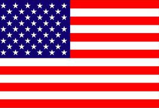 |  |
| 114 | 蒙古 Mongolia [mɔŋ'gəuljə] |
亚洲 MNG MN |
国旗上的火焰是“吉祥和兴旺的种子”，三条火舌象征了过去、当下与未来，而太阳和月亮是蒙古人民传统的象征物。火、日、月三者结合，表示国家的昌盛，中央的阴阳图象征了国家的和谐，下方的两个三角形等同于箭，向下的三角形表示以武力捍卫家园，阴阳图上下方的两条长方形有坚持正义和忠实之意，左右两方的长方形是一个的城墙，暗示了全民团结，比墙更加的坚固。 |
乌兰巴托 Ulan Bator [u:lɑ:n 'bɑ:tɔ:] |
 背景的红色代表了进步与繁荣，“永恒的蓝天”就以蓝色来取代。 背景的红色代表了进步与繁荣，“永恒的蓝天”就以蓝色来取代。 |
 1206年，成吉思汗建立了蒙古帝国；1271年，忽必烈建立元朝；17世纪末，被纳入清朝统治范围。1921年，取得事实独立； 1206年，成吉思汗建立了蒙古帝国；1271年，忽必烈建立元朝；17世纪末，被纳入清朝统治范围。1921年，取得事实独立； |
| 115 | 孟加拉国 Bangladesh [͵bɑ:ŋglə'de∫] |
亚洲 BGD BI |
the People's Republic of Bangladesh
孟加拉人民共和国全世界人口密度最高的人口大国及世界最贫穷国家之一。 国旗深绿色象征朝气蓬勃、充满生机的祖国绿色大地，象征青春活力和繁荣昌盛；红色圆轮象征经过流血斗争的黑夜之后的黎明。整个旗面如广阔的平原上正冉冉升起一轮红日，寓意孟加拉人民共和国的光明前景和无限生机。 |
达卡 Dhaka [`dækə] |
 |
 |
| 117 | 密克罗尼西亚 Micronesia [͵maɪkrəʊ`ni:zɪə], [-ӡə] |
大洋洲 FSM FM |
the Federated States of Micronesia 密克罗尼西亚联邦； 国旗浅蓝色象征该国辽阔的海域，四颗五角星象征这个国家的四个州（科斯雷、波纳佩、特鲁克、雅浦）。 |
帕利基尔 Palikir [pælikə] |
 |
 |
| 118 | 缅甸 Myanmar [mjænmɑ:] |
亚洲 MMR MM |
the Union of Myanmar 缅甸联邦(亦作Burma) 国旗绿色代表和平、安宁、草木茂盛、青葱翠绿的环境，黄色描绘出团结，红色象征勇敢与决心，白星反映出坚强联邦永恒不坠的意义。 |
仰光 Rangoon [ræŋ'gu:n] |
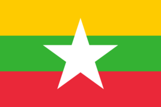 |  |
| 119 | 摩尔多瓦 Moldova [mɔl'dɔvɑ:] |
欧洲 MDA MD |
the Republic of Moldova 摩尔多瓦共和国 国旗蓝黄红三色源自罗马尼亚国旗，代表摩尔多瓦与罗马尼亚是同一个民族。国徽中金色的雄鹰口衔十字架，左爪持一根象征权威的权杖，右爪拿着象征和平的橄榄枝。黄色的牛头象征正义，牛头上方的黄色八角星代表国家主权。 |
基希讷乌 Chisinau / kishinev [ki∫inef] |
 |
 |
| 120 | 摩洛哥 Morocco [mə'rɔkəu] |
非洲 MAR MA |
the Kingdom of Morocco 摩洛哥王国 国旗绿色是穆罕默德后代所喜欢的颜色，五角星象征人民对伊斯兰教的信仰；这一图案是驱病避邪的所罗门护符。 |
拉巴特 Rabat [rə'bɑ:t] |
 |
 |
| 121 | 摩纳哥 Monaco ['mɔnəkəu] |
欧洲 MCO MC |
the Principality of Monaco 摩纳哥公国[͵prinsi'pæliti]是位于欧洲的一个城邦国家，是欧洲两个公国之一（另一个是列支敦士登），也是世界第二小的国家（仅次于梵蒂冈），总面积为1.98平方公里。 |
摩纳哥城 Monaco-Ville |
 |
 |
| 122 | 莫桑比克 Mozambique ['məuzəm'bi:k] |
非洲 MOZ MZ |
the Republic of Mozambique 莫桑比克共和国 国旗绿色象征农业和财富，黑色代表非洲大陆，黄色象征地下资源，白色象征人民斗争的正义性及所要建立的和平事业，红色象征争取民族解放的武装斗争和革命。黄色五角星代表国际主义精神，书本象征文化教育，AK47步枪和锄头象征广大劳动者和武装部队的团结及其共同保卫、建设祖国。 |
马普托 Maputo [mæ'putə] |
 |
 |
| 123 | 墨西哥 Mexico ['meksɪkəʊ] |
北美洲 MEX MX |
(The United States of Mexico) 绿色象征独立和希望，白色象征和平与宗教信仰，红色象征国家的统一。国徽为一只展翅的雄鹰嘴里叼着一条蛇，一只爪抓着蛇身，另一只爪踩在从湖中的岩石上生长出的仙人掌上。下方为橡树和月桂树枝叶，象征力量、忠诚与和平。 |
墨西哥城Mexico City 玛雅文化,公元前兴建太阳金字塔和月亮金字塔，"玉米的故乡”“仙人掌的国度”、“白银王国”、“浮在油海上的国家”. |
 |
 |
| 124 | 纳米比亚 Namibia [nə'mi:biə] |
非洲 NAM NA |
the Republic of Namibia 纳米比亚共和国 旗面左上角有一个放射12道光芒的金色太阳。太阳象征生命和能力，金黄色代表温暖和该国的平原、沙漠；蓝色象征天空、大西洋、海洋资源和水及其重要性；红色象征人民的英雄主义，表达人民决心建设一个平等、美好的未来；绿色代表该国的植物和农业；白色象征和平与统一。 |
温得和克 Windhoek [vinthuk] |
 |
 |
| 125 | 南非 South Africa [sauθ'æfrikə] |
非洲 ZAF ZA |
the Republic of South Africa 南非共和国 黄金、钻石生产量均占世界首位。 旗面中央是一横Y形三色条，占旗宽的三分之一。象征着聚合不同的南非民族，共同发展，一起走向今后的道路。绿色代表土地，金色代表金子，白色代表白人，黑色代表黑人。 |
比勒陀利亚 Pretoria [pri'tɔ:riə] |
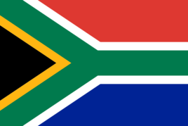 |  |
| 126 | 南苏丹 South sudan [sʊ'dɑ:n] |
非洲 | 国旗红色象征被解放的斗争烈士流下的血液；白色象征经过多年的解放斗争取得和平；蓝色象征尼罗河水域，为国家的生活来源；绿色代表着农业和土地；黑色象征非洲黑人的皮肤，代表着南苏丹国家的人民；黄星象征指导国家及其公民，使国家的十个州团结一致。 |
|
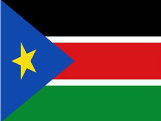 |  |
| 127 | 瑙鲁 Nauru [nɑ:'u:ru:] |
非联合国会员国 NRU NR |
the Republic of Nauru 瑙鲁共和国 面积只有24㎞²，是世界上最小的岛国。 国旗黄条象征赤道，其上半部的蓝色象征蓝天，下半部的蓝色象征海洋，12角星象征瑙鲁原来的12个部落。 |
亚伦 Yaren [`jɑ:rən] |
 |
 |
| 128 | 尼泊尔 Nepal [ni'pɔ:l] |
亚洲 NPL NP |
the Kingdom of Nepal 尼泊尔王国 (2008年改为the Federal Democratic Republic of Nepal 尼泊尔联邦民主共和国）佛教的发源地。 国旗红色是国花红杜鹃的颜色，蓝色代表和平。上面的三角形旗中是白色弯月、星图案，代表皇室；下面三角形旗中的白色太阳图案来自拉纳家族的标志，太阳和月亮图案也代表尼泊尔人民期盼国家象日月一样长存的美好愿望。两个旗角表示喜马拉雅山脉的两个山峰。 |
加德满都 Kathmandu [kɑ:tmɑ:n'du:] |
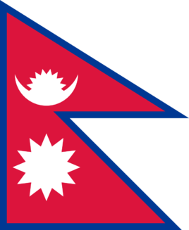 |  |
| 129 | 尼加拉瓜 Nicaragua [͵nikə'rɑ:gwə], [͵nikə'rægjuə] |
北美洲 NIC NI |
the Republic of Nicaragua 尼加拉瓜共和国 国旗颜色来源自原中美洲联邦国旗，也象征这个国家在太平洋和加勒比海之间;国徽由三条黄边象征平等、真理和正义。五座绿山象征原组成中美洲联邦的洪都拉斯、危地马拉、尼加拉瓜、萨尔瓦多和哥斯达黎加。蓝色象征由中美洲地峡分开的太平洋和加勒比海。山顶的黄色反映了该地区多火山的高原地貌。绿山之上竖立“自由之竿”和“自由之帽”。上端的彩虹象征希望。三角形图案周围是用西班牙文写的“中美洲，尼加拉瓜共和国”。外面一圈的英文字母是尼加拉瓜的英文名称。 |
马那瓜 Managua [mə'nɑ:gwə] |
 |
 |
| 130 | 尼日尔 Niger ['naidӡə] |
非洲 NER NE |
the Republic of the Niger 尼日尔共和国 国旗橙色象征撒哈拉沙漠；白色象征纯洁；绿色代表美丽富饶的土地，也象征博爱和希望。圆轮象征太阳，还象征尼日尔人民为保护自己的权力而不惜牺牲的愿望。 |
尼亚美 Niamey [͵nja:'mei] |
 |
 |
| 131 | 尼日利亚 Nigeria [nai'dӡiəriə] |
非洲 NGA NG |
the Federal Republic of Nigeria 尼日利亚联邦共和国是非洲第一人口大国，总人口1.73亿，占非洲总人口的16%，也是非洲第一大经济体，2013年，尼日利亚国内生产总值（GDP）5099亿美元。 尼日利亚是非洲能源资源大国，是非洲第一大石油生产和出口大国。 |
阿布贾 Abuja [ɑ: 'bu:dʒɑ:]原是拉各斯lagos'leigɔs) |
 绿色象征农业，白色象征和平与统一。 绿色象征农业，白色象征和平与统一。 |
 |
| 132 | 挪威 Norway ['nɔ:wei] |
欧洲 NOR NO |
the Kingdom of Norway 挪威王国意为“通往北方之路”，海岸线漫长曲折，沿海岛屿很多，被称为“万岛之国”，国旗十字的来历与丹麦国旗的十字来历相同(曾被丹麦统治)。蓝、白、红象征着自由与独立。 |
奥斯陆 Oslo [ɔzləu] |
 |
 |
| 133 | 帕劳 Palau [pɑ:`laʊ] |
大洋洲 PLW PW |
the Republic of Palau 帕劳共和国 旗地为蓝色，象征海洋。中间偏左处有一轮金色圆月，象征民族团结和结束外国统治。月亮在帕劳人心目中是安定、和平与爱的象征。蓝色代表浩涵的太平洋，又象征自由、独立和主权。 |
科罗尔 Koror ['kɔ:ɔ:] |
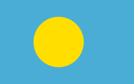 |  |
| 134 | 葡萄牙 Portugal ['pɔ:tjugəl] |
欧洲 PRT PT |
the Portuguese
Republic 葡萄牙共和国 16世纪起，葡萄牙在大航海时代中扮演活跃的角色，成为重要的海上强国。全盛时期的葡萄牙甚至和西班牙共同签署了托尔德西里亚斯条约，意图瓜分世界。16世纪到18世纪葡萄牙和西班牙成为影响世界的最强大的全球性帝国。自从1415年攻占北非休达到1999年澳门政权移交,殖民活动几近六百年，曾包括世界53个国家的部分领土. |
里斯本 Lisbon [lizbən] |
 红色表示对1910年成立第二共和国的庆贺，绿色表示对被称为“航海家”的亨利亲王的敬意。国徽中心图案是金色的古老航行仪器浑天仪。浑天仪上面嵌有一枚白边红底盾徽，盾徽中的7座金色城堡是为庆祝葡萄牙和卡斯蒂尔王族联姻而于1252年增添的。 红色表示对1910年成立第二共和国的庆贺，绿色表示对被称为“航海家”的亨利亲王的敬意。国徽中心图案是金色的古老航行仪器浑天仪。浑天仪上面嵌有一枚白边红底盾徽，盾徽中的7座金色城堡是为庆祝葡萄牙和卡斯蒂尔王族联姻而于1252年增添的。 |
 红色后面里的白色盾徽是国徽的核心，五枚小型蓝盾组成的“赎罪十字”镶嵌于其中，它们分别代表1139年在阿方索·亨瑞克斯领导下，在奥利盖战役中打败摩尔人的5位国王。每个蓝色小盾上都有5个白色圆斑，表示基督被钉在十字架上时的5处伤口，这是基督的殉难像，同时也暗示当年阿方索正是以耶稣的名义在圣灵的帮助下击败了摩尔人。圆斑的总数为25个，加上5枚蓝色盾徽而得30，这正是犹大出卖耶稣换取的银币的总数。国徽周围装饰着和平的标志橄榄枝，为葡萄牙人民心之所系。 红色后面里的白色盾徽是国徽的核心，五枚小型蓝盾组成的“赎罪十字”镶嵌于其中，它们分别代表1139年在阿方索·亨瑞克斯领导下，在奥利盖战役中打败摩尔人的5位国王。每个蓝色小盾上都有5个白色圆斑，表示基督被钉在十字架上时的5处伤口，这是基督的殉难像，同时也暗示当年阿方索正是以耶稣的名义在圣灵的帮助下击败了摩尔人。圆斑的总数为25个，加上5枚蓝色盾徽而得30，这正是犹大出卖耶稣换取的银币的总数。国徽周围装饰着和平的标志橄榄枝，为葡萄牙人民心之所系。 |
| 135 | 日本 Japan [dӡə'pæn] |
亚洲 JPN JP |
国旗白色衬底象征着纯洁，红日居中象征着忠诚。传说日本是太阳神所创造，天皇是太阳神之子。 |
日本国东京 Tokyo [təukjəu] |
 |
 |
| 136 | 瑞典 Sweden ['swi:dn] |
欧洲 SWE SE |
the Kingdom of Sweden 瑞典王国 |
斯德哥尔摩 Stockholm [stɔkhəum] |
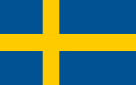 |  |
| 137 | 瑞士 Switzerland ['switsələnd] |
欧洲 CHE CH |
the Swiss Confederation 瑞士联邦 "欧洲屋脊",世界公园。 国旗白色象征和平、公正和光明，红色象征着奋斗和爱国热情；国旗的整组图案象征国家的统一。 |
伯尔尼 Bern [bə:n,bεən] |
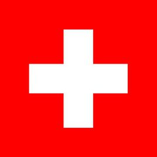 |  |
| 138 | 萨尔瓦多 Salvador [sælvədɔ:] |
北美洲 SLV SV |
the Republic of El Salvador 萨尔瓦多共和国 国旗颜色与原中美洲联邦国旗之颜色相同。蓝色象征蓝天和海洋，白色象征和平。 |
圣萨尔瓦多 San Salvador [sæn'sælvədɔ:] |
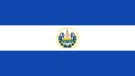 |  |
| 139 | 萨摩亚 Samoa [sə'məuə] |
大洋洲 WSM WS |
the Independent State of Samoa 萨摩亚独立国 国旗红色象征勇气，蓝色象征自由，白色象征纯洁，五颗星代表南十字座。 |
阿皮亚 Apia [ɑ:'pi:ɑ:] |
 |
 |
| 140 | 塞尔维亚 Serbia ['sə:bjə] |
欧洲 |
the Republic of Serbia 塞尔维亚共和国 历史上的塞尔维亚王国由南方斯拉夫人建立。一战后成为南斯拉夫的主体部分。1992年塞尔维亚与黑山组成南联盟（后改名为塞黑）。2006年6月5日正式独立。大国徽为小国徽覆以斗蓬和王冠。小国徽为红色盾面上方有一顶金色王冠，是过去塞尔维亚王国的象征。盾面内有南欧斯拉夫民族象征——双头鹰。鹰的胸部有一个被白色十字居中分割成四个区域的红色小盾徽，每一区域里又各有一个类似西里尔字母中的C的火器，代表S的发音，象征“唯有团结拯救塞尔维亚人”的国家格言。 |
贝尔格莱德 Belgrade [bel'greid] |
 |
 |
| 141 | 塞拉利昂 Sierra Leone ['siərə li'əun] |
非洲 SLE SL |
the Republic of Sierra Leone 塞拉利昂共和国 国旗绿色象征农业，还代表国家的自然资源和山脉； 白色象征国家的统一和人民对正义的追求；蓝色象征海洋和希望，希望塞拉利昂的天然良港对世界和平作出贡献。 |
弗里敦 Freetown [fri:taun] |
 |
 |
| 142 | 塞内加尔 Senegal [͵seni'gɔ:l] |
非洲 SEN SN |
the Republic of Senegal 塞内加尔共和国 国旗绿色象征国家的农业、植物和森林，黄色象征丰富的自然资源，红色象征为争取独立自由而斗争的烈士的鲜血；绿、黄、红色也是传统的泛非颜色。绿色五角星象征非洲的自由。 |
达喀尔 Dakar [dækə] |
 |
 |
| 143 | 塞浦路斯 Cyprus ['saiprəs] |
亚洲 CYP CY |
the Republic of Cyprus 塞浦路斯共和国 希腊语中意为“产铜之岛”。 国旗中间为橘色的塞浦路斯领土外型以及两枝交叉的绿色橄榄枝。黄色代表塞浦路斯的主要矿产铜矿。领土外型希腊裔与土耳其裔要同心协力建设好国家，橄榄枝代表着塞浦路斯向往和平。 |
尼克西亚 Nicosia [͵nikəu'si:(ə）] |
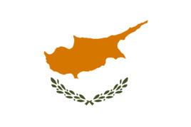 |  |
| 144 | 塞舌尔 Seychelles [sei'∫elz] |
非洲 SYC SC |
the Republic of Seychelles 塞舌尔共和国 国旗由五道自左下角放射出的光芒组成，蓝色蓝象征海洋；黄是象征太阳；红是象征人民及其在爱与团结中奋斗的决心；白色象征社会正义与和谐；绿色象征土地与自然。 |
维多利亚 Victoria [vik'tɔ:riə] |
 |
 |
| 145 | 沙特阿拉伯 Saudi Arabia ['saudi ə'reibjə] |
亚洲 SAU SA |
the Kingdom of Saudi Arabia 沙特阿拉伯王国 石油储量和产量均居世界首位，麦加是伊斯兰教创建人穆罕默德的诞生地，“沙特”取自于沙特阿拉伯王国的创始人伊本·沙特之名。而在阿拉伯语中，沙特是“幸福”的意思，“阿拉伯”则指“沙漠”，意为“幸福的沙漠”。 |
利雅得 Riyadh [ri:'jɑ:d] |
 绿色的旗地上写着伊斯兰教的清真格言：“万物非主，唯有安拉；穆罕默德，主之使者”。下方绘有宝刀，象征圣战和自卫。绿色象征和平，是伊斯兰国家所喜爱的一种吉祥颜色。国旗的颜色和图案突出地表明了该国的宗教信仰。 绿色的旗地上写着伊斯兰教的清真格言：“万物非主，唯有安拉；穆罕默德，主之使者”。下方绘有宝刀，象征圣战和自卫。绿色象征和平，是伊斯兰国家所喜爱的一种吉祥颜色。国旗的颜色和图案突出地表明了该国的宗教信仰。 |
 |
| 146 | 圣多美及普林西比 Sao Tome and Principe |
非洲 STP ST |
the Democratic Republic of Sao Tome and Principe 圣多美及普林西比民主共和国 国旗绿色象征农业，黄色象征可可豆和其他自然资源，红色象征为独立自由而斗争战士的鲜血，两个五角星代表圣多美、普林西比两个大岛，黑色象征黑人。 |
圣多美 Sao Tome |
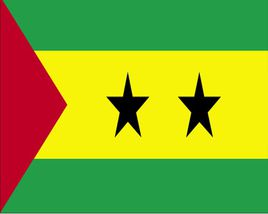 |  |
| 147 | 圣基茨和尼维斯 Saint Kitts and Nevis [seint`ni:vɪs]， [`ne-] |
北美洲 KNA KN |
the Federation of Saint Kitts and Nevis 圣基茨和尼维斯联邦 (原称圣克里斯托弗和尼维斯St. Christopher 国旗绿色象征绿色大地和各种农作物，红色象征独立后国家的新生，黄色象征阳光，黑色象征这个岛国主要是黑色人种。两颗白色五角星象征圣基茨岛和尼维斯岛。 |
巴斯特尔 Basseterre [bɑ:s`teə] |
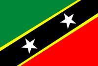 |  |
| 148 | 圣卢西亚 Saint Lucia ['lu:ʃə,lu: 'si:ə] |
北美洲 LCA LC |
国旗蓝色代表圣卢西亚周围的海洋、黑色代表火山，黑色和白边又代表该国的两个主要民族，黄色象征该岛国的海滩和阳光。白、黑、黄三色构成的三角形，象征圣卢西亚这个岛国。 |
卡斯特里 Castries [kæ`stri:], [`kɑ:strɪs] |
 |
 |
| 149 | 圣马力诺 San Marino [͵sæn mə'ri:nəu] |
欧洲 SMR SM |
the Republic of San Marino 圣马力诺共和国 旗地中央是国徽图案。白色象征白雪，还象征纯洁；浅蓝色象征蓝天。国徽是被橡树和月桂树枝所环绕的中央是一颗蓝色心形纹徽。纹徽中间的3座白塔，称为三彼尼，它们代表着梯塔诺山 峰上的3座城堡。白塔上括有白色的鸵鸟羽毛，是亚平宁半岛的象征。白塔下的绿色山峰暗示着圣马力诺是建在山上的小国。国徽顶端绘有一顶金色的镶有珠宝的公爵王冠，表示圣马力诺曾是意大利马尔比诺公爵的保护地；国徽下端的白色饰带上有表示自由女神的文字“自由”， |
圣马力诺 San Marino |
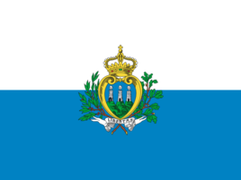 |  |
| 150 | 圣文森特和格林纳丁斯 Saint Vincent and the Grenadines vinsənt |
北美洲 VCT VC |
圣文森特和格林纳丁斯
国旗蓝色象征海洋，绿色象征大地，黄色象征阳光。 |
金斯敦 Kingstown `kɪŋstaʊn |
 |
|
| 151 | 斯里兰卡 Sri Lanka [sri'læŋkə] |
亚洲 LKA LK |
the Democratic Socialist Republic of Sri Lanka 斯里兰卡民主社会主义共和国 国旗咖啡色代表僧伽罗族，占全国人口的72%；橙、绿色代表泰米尔族、摩尔族等少数民族；黄色边框象征人民追求光明和幸福。菩提树叶表示对佛教的信仰，而其形状又和该国国土轮廓相似；狮子图案标志着该国的古称“古狮国”，也象征刚强和勇敢。 |
科伦坡 Colombo [kə'lʌmbəu] |
 |
 |
| 152 | 斯洛伐克 Slovakia [sləu'vækiə] |
欧洲 SVK SK |
the Slovak Republic 斯洛伐克共和国 白、蓝、红三色为泛斯拉夫色，也是斯洛伐克人民喜欢的传统颜色。国徽为盾。下部是三个蓝色的山峰图案，其上为白色的双十字标志。蓝色山峰代表斯洛伐克的最高峰——塔特拉山主峰，海拔2655米的格尔拉赫峰。双十字符号是信奉天主教的象征. |
布拉迪斯拉发 Bratislava [͵bræti'slɑ:və] |
 |
 |
| 153 | 斯洛文尼亚 Slovenia [sləu'vi:njə] |
欧洲 SVN SI |
the Republic of Slovenia 斯洛文尼亚共和国 国旗白色象征对和平与神圣的无限向往和憧憬；蓝色象征人民如大海般自由宽阔的胸襟；红色象征人民争取独立和国家主权的勇气和不朽灵魂。国徽是一枚镶有红边的蓝色盾徽，中间为三座白色山峰，象征该国最高峰——海拔2864米的特里格拉夫峰。山峰下两道蓝色波状条纹代表两条主要河——流萨瓦河和德拉瓦河。蓝色的天幕上，3颗象征独立、自由和光荣的黄色六角星熠熠发光，照耀着斯洛文尼亚共和国的锦绣前程。 |
卢布尔雅那 Ljubljana [lju:bljɑ:nɑ:] |
 |
 |
| 154 | 斯威士兰 Swaziland ['swɑ:zilænd] |
非洲 SWZ SZ |
the Kingdom of Swaziland 斯威士兰王国 国旗在紫红色长方形中央绘有类似斯威士兰国徽中盾牌的图案。紫红色象征历史上无数次战斗，黄色代表丰富的矿产资源，蓝色象征和平。 |
姆巴巴内 Mbabane [mbɑ:'ba:n] |
 |
|
| 155 | 苏丹 Sudan [su:'dæn] |
非洲 SDN SD |
the Republic of the Sudan 苏丹共和国 国名源自于阿拉伯语“Bilad-al-Sudan”，字面意思为“黑人的土地”。 国旗红色象征革命与进步，白色象征和平，黑色象征属非洲黑色人种的南方居民（注：南部地区已于2011年7月9日独立，成立南苏丹共和国），绿色象征北方居民所信奉的伊斯兰教以及繁荣、幸福。 |
喀土穆 Khartoum [kɑ:'tu:m] |
 |
|
| 156 | 苏里南 Suriname [,suərɪ`nɑ:mə] |
南美洲 SUR SR |
the Republic of Suriname 苏里南共和国 南美洲最小的一个国家. 黄色五角星，象征民族的团结和光明的前途；绿色代表丰富的自然资源和肥沃的土地，也象征人民对新苏里南的期望；白色象征正义和自由；红色象征热情和进步，也表示为祖国献出全部力量的愿望。 |
帕拉马里博 Paramaribo [͵pærə`mærɪbəʊ] |
 |
|
| 157 | 所罗门群岛 the Solomon Islands ['sɔləmən] |
大洋洲 SLB SB |
1568年，当西班牙航海家门达尼亚抵达这里时，看见土著居民身上都佩带着金光闪闪的黄金饰物，以为找到了《圣经》中所罗门王的黄金宝库，于是把这里取名为所罗门群岛。 国旗浅蓝色象征海洋和天空，黄色代表太阳，绿色象征该国的森林；五颗星代表组成这个岛国的五个区域，即东、西、中央、马莱塔和其他外围岛屿。 |
霍尼亚拉 Honiara [͵həʊnɪ`ɑ:rə] |
 |
 |
| 158 | 索马里 Somalia [səu'mɑ:liə] |
非洲 SOM SO |
the Somali Democratic Republic 索马里民主共和国 旗地为浅蓝色，正中一颗白色五角星。五角星象征非洲的自由和独立。 |
摩加迪沙 Mogadishu [͵mɔ:gɑ:`di:∫u:] |
 |
 |
| 159 | 塔吉克斯坦 Tajikistan [tɑ:dӡiki'stɑ:n] |
亚洲 TJK TJ |
the Republic of Tajikistan 塔吉克斯坦共和国 中亚五国中唯一主体民族非突厥族系的国家。 国旗红色象征国家的胜利，绿色象征繁荣和希望，白色代表宗教信仰；王冠和五角星图案象征国家的独立和主权。 |
杜尚别 Dushanbe [dju:`∫ɑ:nbɪ] |
 |
 |
| 160 | 泰国 Thailand ['tailænd] |
亚洲 THA TH |
the Kingdom of Thailand 泰国；泰王国 泰国旧名暹罗，1949年5月11日，泰国人用自己民族的名称，把“暹罗”改为“泰”，主要是取其“自由”之意。 国旗红色代表民族和象征各族人民的力量与献身精神。泰国以佛教为国教，白色代表宗教，象征宗教的纯洁。泰国是君主立宪政体国家，国王是至高无上的，蓝色代表王室。蓝色居中象征王室在各族人民和纯洁的宗教之中。 |
曼谷 Bangkok [bæŋ'kɔk] |
 |
 |
| 161 | 坦桑尼亚 Tanzania [͵tænzə'ni:ə] |
非洲 TZA TZ |
the United Republic of Tanzania 坦桑尼亚联合共和国 国旗绿色代表土地，还象征对伊斯兰教的信仰；蓝色象征河流、湖泊和海域；黑色代表非洲黑人；黄色象征丰富的矿产资源和财富。 |
达累斯萨拉姆 Dares Salaam |
 |
|
| 162 | 汤加 Tonga ['tɔŋgə] |
大洋洲 TON TO |
the Kingdom of Tonga 汤加王国 位于太平洋西南部赤道附近，是由173个岛屿组成的岛国，其中36个有人居住，大部分为珊瑚岛。 国旗红色象征基督所洒下的鲜血，十字代表信奉基督教。 |
努库阿洛法 nukualofa [nu:kuə'lɔ:fə] |
 |
|
| 163 | 特立尼达和多巴哥 Trinidad and Tobago ['trɪnɪdæd ənd tə'beɪgəʊ] |
北美洲 TTO TT |
the Republic of Trinidad and Tobago 特立尼达和多巴哥共和国 国旗红色代表国家和人民的生命力，还象征温暖和太阳的热能；黑色象征人民的力量和献身精神，也象征国家的统一和财富；白色象征国家的未来和海洋。两个三角形代表特立尼达岛和多巴哥岛。 |
西班牙港 Port of Spain |
 |
|
| 164 | 突尼斯 Tunisia [tju(:)'niziə] |
非洲 TUN TN |
the Republic of Tunisia 突尼斯共和国 国旗上的新月和五角星来自奥斯曼帝国的标志，现为突尼斯共和国的象征，也是伊斯兰国家的标志。 |
突尼斯市 Tunis [tju:nis] |
 |
 |
| 165 | 图瓦卢 Tuvalu ['tu:vəlu] |
非联合国会员国 TUV TV |
“图瓦卢”在波利尼西亚语中意为“八岛之群”。国土面积约为26㎞²，是仅次于瑙鲁的世界第二小岛国，还是世界面积第四小的国家（仅高于梵蒂冈、摩纳哥和瑙鲁）。 国旗蓝色象征海洋和天空。左上角为英国国旗图案，占据了旗面的四分之一，象征图瓦卢与英国的关系。右侧九颗黄色五角星象征图瓦卢的九个环形珊瑚群岛。 |
富纳富提 Funafuti [͵fju:nə`fju:tɪ] |
 |
 |
| 166 | 土耳其 Turkey ['tə:ki] |
亚洲 TUR TR |
the Republic of Turkey 土耳其共和国 “土耳其”一词由“突厥”演变而来。在鞑靼语中，“突厥”是“勇敢”的意思，“土耳其”意即“勇敢人的国家”。 国旗红色象征鲜血和胜利；新月和星象征驱走黑暗、迎来光明，还标志着土耳其人民对伊斯兰教的信仰，也象征幸福和吉祥 |
安卡拉 Ankara [æŋkərə] |
 |
 |
| 167 | 土库曼斯坦 Turkmenistan [͵tə:kmeni'stɑ:n] |
亚洲 TKM TM |
国旗绿色是土库曼人民喜欢的传统颜色，白色象征平静与仁慈；新月象征光明前途；五颗星象征人类的五种器官功能；视、听、嗅、味、触；也同时象征著该国的五个地区：阿哈尔、巴尔坎、列巴普、马雷、达绍古兹。五角星的五个角象征宇宙物质的状态：固态、液态、气态、晶态和等离子态；星与月合起来是伊斯兰教的标志。 |
阿什哈巴德 Ashgabat [͵ɑ:ʃgɑ:'bɑ:t] |
宽带中自上而下排列著五种地毡图案，每个图案呈团花状，有些以颜色的交错形成四等分。在地毯中，大蔷薇图案一般重复成列或形成格子样式，置于图案中心，小蔷薇图案则出现在镶边上。地毯图案象征土库曼人民的传统观念和宗教信仰，也反映了土库曼斯坦人的民族习性 |
 |
| 168 | 瓦努阿图 Vanuatu [͵vɑ:nu:`ɑ:tu:] |
大洋洲 VUT VU |
the Republic of Vanuatu 瓦努阿图共和国 国旗上横置“Y”字型表示该国岛屿的分布形状；黄色象征阳光普照全国；黑色代表人民的肤色；红色象征鲜血；绿色象征肥沃土地上生长繁茂的植物。猪牙象征该国传统的财富，“纳米丽”叶是当地人民信奉的一种神圣之树的叶子，象征神圣、吉祥。 |
维拉港 Port Vila [pɔ:t 'vi:lə] |
 |
|
| 169 | 危地马拉 Guatemala [͵gwæti'mɑ:lə] |
北美洲 GTM GT |
the Republic of Guatemala 危地马拉共和国 国徽中间是一幅展开的轴卷，其上用西班牙文写着“1821年9月15日，自由”，以纪念危地马拉摆脱西班牙殖民统治获得独立。轴卷上栖息着一只绿色的格查尔鸟。也称“自由之鸟”，被视为自由、爱国、友谊的象征。轴卷背后交叉着步枪和长剑，象征该国人民时刻准备捍卫祖国的自由。上述图案由月桂树枝环抱。 |
危地马拉城 Guatemala City |
 国旗的颜色来自原中美洲联邦国旗之颜色。蓝色分别象征太平洋和加勒比海，白色象征对和平的追求。 |
 |
| 170 | 委内瑞拉 Venezuela [͵vene'zweilə] |
南美洲 VEN VE |
the Republic of Venezuela 委内瑞拉共和国 “瀑布之乡”,国名“Venezuela”其实源自意大利文“小威尼斯”之义; 黄、蓝、红三色来自原大哥伦比亚共和国国旗颜色,黄色代表丰富的资源，蓝色代表天空和大海，红色代表独立战争中牺牲的战士的鲜血。八颗五角星代表八个省。 |
加拉加斯 Caracas [kə'rækəs] |
 |
 |
| 171 | 文莱 Brunei ['bru:nai] |
亚洲 BRN BN] |
Brunei Darussalam 文莱达鲁萨兰国 国徽的新月，象征文莱是信奉伊斯兰教的国家。新月中心，一根棕桐树干伸展枝叶，与月牙尖连接起来象征和平。双翼上端一顶华盖和一面三角旗则代表苏丹至高无上的权威。新月中央的金色马来文字写着“永远在真主指引下”，表示了文莱人对真主的虔敬。两侧有两只支撑着的手臂，既表示占文莱人口多数的马来人向真主的祈求，又表示文莱臣民对苏丹的拥戴。国微底部一条红色饰带上书写着“和平之城——文莱”。 |
斯里巴加湾市 (Bandar Seri Begawan |
 黄色代表苏丹至高无上。后来为了纪念两位有功的亲王，文莱决定在国旗上加了黑、白两条斜条。 |
 |
| 172 | 乌干达 Uganda [ju(:)'gændə]， [u:'gændə] |
非洲 UGA UG |
the Republic of Uganda 乌干达共和国 “高原水乡” 旗面中央有一白色圆地，其中为一只乌干达国鸟——皇冠鹤。黑色代表乌干达人民，象征黑人；黄色象征阳光；红色象征自由，三色组合的含义为阳光照耀下乌干达人民获得独立自由。 |
坎帕拉 Kampala kɑ:m'pɑ:lə |
 |
|
| 173 | 乌克兰 Ukraine [ju(:)'krein] |
欧洲 UKR UA |
世界上第三大粮食出口国，有着“欧洲粮仓”的美誉。 |
基辅 kyiv或 Kiev [ki:ev] |
 |
 |
| 174 | 乌拉圭 Uruguay ['urugwai] |
南美洲 URY UY |
the Eastern Republic of Uruguay 乌拉圭东岸共和国 “南美瑞士”；又因其形似宝石而又盛产紫晶石，获誉为“钻石之国”。 乌拉圭历史上曾同阿根廷组成一个国家，所以两国国旗都有蓝、白色和“五月的太阳”；九道宽条代表当时组成共和国的九个政治区域；太阳放射八道直线和八道波状光芒，它象征国家的独立。 |
蒙得维的亚 Montevideo [͵mɔntivi'deiəu] |
 |
|
| 175 | 乌兹别克斯坦 Uzbekistan [͵uzbeki'stɑ:n] |
亚洲 UZB UZ |
the Republic of Uzbekistan 乌兹别克斯坦共和国 是世上两个双重内陆国之一（另一个为列支敦士登）。 国旗蓝色是突厥人的颜色，也是帖木儿旗帜的颜色：蓝色也象征永恒的天空、纯净的水。白色象征和平、出门平安的祈愿，象征思想与行动的净化斗争。绿色则为自然、新生命的颜色，也是伊斯兰的颜色。红色镶边象征旺盛的生命力，连结了美善的思想、永恒的苍穹、地球上的行为。新月象征新的共和国。12颗星象征一年12个月和黄道十二宫，象征自强不息。 |
塔什干 Tashkent [tæ∫'kent] |
 |
 |
| 176 | 西班牙 Spain [spein] |
欧洲 ESP ES |
the Kingdom of Spain 西班牙王国 国徽盾面上有六组图案：左上角是红地上黄色城堡，右上角为白地上头戴王冠的红狮，城堡和狮子是古老西班牙的标志，分别象征卡斯蒂利亚和莱昂；左下角为黄、红相间的竖条，象征东北部的阿拉贡；右下角为红地上金色链网，象征位于北部的纳瓦拉；底部是白地上绿叶红石榴，象征南部的格拉纳达；盾面中心的蓝色椭圆形中有三朵金百合花，象征波旁-卡佩家族的统治。盾徽上端有一顶大王冠，这是国家权力的象征。盾徽两旁各有一根海格立斯柱子。亦称大力神银柱，左、右柱顶端分别是王冠和帝国冠冕，缠绕着立柱的饰带上写着“海外还有大陆”。 |
马德里 Madrid [mə'drid] |
红、黄两色是西班牙人民深爱的传统色彩，象征着人民对祖国的一片赤胆忠心。西班牙于1785年使用了红、黄、红的旗帜挂在船上，成为西班牙的代表色。黄色部分偏左侧绘有西班牙国徽。分别代表组成西班牙的四个古老王国。 |
 现今全球有5亿人口使用西班牙语，为世界上总使用人数第3多的语言。有“旅游王国”美誉。 |
| 177 | 希腊 Greece [gri:s] |
欧洲 GRC GR |
the Hellenic Republic [he'li:nik] 希腊共和国 西方文明的发源地，国旗蓝白九条宽表示希腊一句格言：“不自由宁死”。这句格言希腊文共有九个音节。旗面上蓝色象征对基督教的信仰。 |
雅典 Athens [æθinz] |
 |
|
| 178 | 新加坡 Singapore [͵siŋgə'pɔ:] |
亚洲 SGP SG |
the Republic of Singapore 新加坡共和国 新加坡“Singapura"是梵语“狮城”之谐音. |
新加坡市 Singapore City |
 国旗红色代表了平等与友谊，白色象征着纯洁与美德。新月表示新加坡是一个新建立的国家，而五颗五角星代表了国家的五大理想：民主、和平、进步、公正、平等。 |
 新加坡北隔柔佛海峡与马来西亚为邻，南隔新加坡海峡与印度尼西亚相望，毗邻马六甲海峡南口，国土除新加坡岛之外，还包括周围数岛。 |
| 179 | 新西兰 New Zealand [nju:'zi:lənd] |
大洋洲 NZL NZ |
国旗“米”字图案表明同英国的传统关系；四颗星表示南十字星座，表明该国位于南半球，同时还象征独立和希望。 |
惠灵顿 Wellington [weliŋtən] |
 |
|
| 180 | 匈牙利 Hungary ['hʌŋgəri] |
欧洲 HUN HU |
the Republic of Hungary 匈牙利共和国 国名以民族名称命名。一般认为匈牙利的主要民族马扎尔族即匈牙利族。“匈牙利”的含意是“十个部落”。 国旗红色象征爱国者的热血，还象征国家的独立和主权；白色象征和平，代表人民追求自由和光明的美好愿望；绿色象征着匈牙利的繁荣昌盛，象征人民对未来充满信心和希望。 |
布达佩斯 Budapest [bu:də'pest] |
 |
 著名的多瑙河，从斯洛伐克南部流入匈牙利，恰恰把匈牙利一截成东、西两部分。 |
| 181 | 叙利亚 Syria ['siriə] |
亚洲 SYR SY |
the Syrian Arab Republic 阿拉伯叙利亚共和国 国旗红色象征勇敢，白色象征纯洁和宽容，黑色是穆罕默德已赢得胜利的象征，绿色是穆罕默德的子孙所喜爱的颜色，五角星象征阿拉伯革命。此外，该国旗还有一个含义：红、白、黑是阿拉伯联合共和国国旗色调，表示叙利亚曾经加盟阿拉伯联合共和国，白色部分五角星数量表示是第几个加盟阿拉伯联合共和国的国家，叙利亚是第二个，所以标有两颗星。 |
大马士革 Damascus [də'mæskəs] |
 |
 |
| 182 | 牙买加 Jamaica [dӡə'meikə] |
北美洲 JAM JM |
牙买加（英文：Jamaica）起源于印第安语，意为“林水之乡”。 国旗黄色代表该国的自然资源和阳光，黑色象征已经克服和即将面临的困难，绿色象征希望和国家丰富的农业资源。 |
金斯敦 Kingston [kiŋstən] |
 |
|
| 183 | 亚美尼亚 Armenia [ɑ:'mi:njə] |
亚洲 ARM AM |
the Republic of Armenia 亚美尼亚共和国 国旗红色象征烈士的鲜血和国家革命的胜利，蓝色代表国家丰富的资源，橙色象征光明、幸福和希望。 |
埃里温 Yerevan [jere'vɑ:n] |
 |
 |
| 184 | 也门 Yemen ['jemən] |
亚洲 YEM YE |
the Republic of Yemen 也门共和国 国旗红色象征革命和胜利。白色象征神圣与纯洁。黑色象征过去的黑暗时代。 |
萨那 [Sana'a] |
 |
|
| 185 | 伊拉克 Iraq [i'rɑ:k] |
亚洲 IRQ IQ |
the Republic of Iraq 伊拉克共和国 历史上曾被称为美索不达米亚，是人类文明的主要发源地之一。 国旗中间用阿拉伯文写着“真主至高无上”四种颜色是泛阿拉伯颜色，分别代表穆罕默德后代的四个王朝。此外红色代表勇猛和革命，白色象征宏大和和平，黑色象征圣战胜利和石油，绿色象征土地。 |
巴格达 Baghdad [`bægdæd] |
 |
 |
| 186 | 伊朗 Iran [i'rɑ:n] |
亚洲 IRN IR |
the Islamic Republic of Iran 伊朗伊斯兰共和国 国徽由四弯新月、一把宝剑和一本古兰经组成。新月象征宗教——伊斯兰教；古兰经位于顶端，象征伊斯兰教高于一切，是共和国行为准则的依据；宝剑象征坚定与力量，有如巨刃摩天，力斩“恶摩”。四弯新月和古兰经书本组成阿拉伯文的“安拉”（真主）；而整个图案呈圆形，象征地球，表示“安拉”的伊斯兰思想遍及全球。 |
德黑兰 Tehran [teə`ræn], [-`rɑ:n] |
 国旗白色与绿色、红色交接处，分别用阿拉伯文写着“真主伟大”，上下各11句，共22句。绿色代表农业，象征生命和希望；白色象征神圣与纯洁；红色表示伊朗有丰富的矿产资源。 |
 |
| 187 | 以色列 Israel ['izreiəl] 以色列（希伯来文：מְדִינַתיִשְׂרָאֵל意为“与神角力者”，来源于《圣经》犹太人的祖先雅各与神（天使）角力并取胜，神（天使）将雅各的名字改为以色列。 |
亚洲 ISR IL |
the State of Israel 以色列国 国旗蓝白两色来自犹太教徒祈祷时用的披肩的颜色。白色旗面正中，是一个蓝色的六角星，这是古以色列国王大卫王之星，以色列第二任国王大卫（David）名字的意思是“被蒙爱者”，大卫王之星象征国家的权力。 |
特拉维夫 Tel Aviv [͵telə'vi:v] |
 |
 |
| 188 | 意大利 Italy ['itəli] “小牛生长的乐园” |
欧洲 ITA IT |
the Italian Republic 意大利共和国 欧洲文化的摇篮，意大利曾孕育出罗马文化及伊特拉斯坎文明。现在，意大利共拥有48个联合国教科文组织世界遗产，是世界上拥有世界遗产最多的国家 |
罗马 Rome [rəum] |
 |
 |
| 189 | 印度 India ['indjə] |
亚洲 IND IN |
the Republic of India 印度共和国 国旗正中心有一个含24根轴条的蓝色法轮，称为“阿育王法轮”象征着真理与道德，也代表了印度古老的文明。法轮的24根轴条则可代表一天的24小时，象征国家时时都向前进。橙色象征了勇气、献身与无私，也是印度教士法衣的颜色。白色代表了真理与和平。绿色则代表繁荣、信心与人类的生产力。 |
新德里 New Delhi [nju:'deli] |
 |
 |
| 190 | 印度尼西亚 Indonesia [͵indəu'ni:zjə] “千岛之国”印度尼西亚一词源自希腊语的印度（Indus）及岛屿（nèsos），指印度各岛。 |
亚洲 IDN ID |
the Republic of Indonesia 印度尼西亚共和国 国旗红色象征勇敢和正义，还象征印度尼西亚独立以后的繁荣昌盛；白色象征自由、公正、纯洁，还表达了印尼人民反对侵略<、爱好和平的美好愿望。/p> |
雅加达 Jakarta [dӡə'kɑ:tə] |
 |
 |
| 191 | 英国 United Kingdom 除本土之外，其还拥有十四个海外领地.世界上第一个工业化国家，首先完成工业革命，国力壮大。18世纪至20世纪初期英国统治的领土跨越全球，是当时世界上最强大的国家。 |
欧洲 GBR GB |
the United Kingdom of Great Britain and Northern Ireland ['britən] 旗中带白边的红色正十字代表英格兰守护神圣乔治，白色交叉十字代表苏格兰守护神圣安德鲁，红色交叉十字代表爱尔兰守护神圣帕特里克。此旗产生于1801年，是由原英格兰的白底红色正十旗、苏格兰的蓝底白色交叉十字旗和北爱尔兰的白底红色交叉十字旗重叠而成，形成一个“米”字。而威尔士的旗帜并没有被融入英国国旗，威尔士的是绿白各半的底和一个红色火龙。 |
伦敦 London lʌndən |
 |
 |
| 192 | 约旦 Jordan ['dӡɔ:dn] |
亚洲 JOR JO |
the Hashemite Kingdom of Jordan 约旦哈希姆王国 [`hæ∫ɪmaɪt] 国旗颜色为泛阿拉伯色，白色七角星象征古兰经。约旦国旗和巴勒斯坦国旗很相似，唯一不同是约旦国旗在红色三角形上多一个白色七角星。 |
安曼 Amman [æ'mɑ:n] |
 |
 |
| 193 | 越南 Viet Nam [͵vɪət'næm] |
亚洲 VNM VN |
the Socialist Republic of Viet Nam 越南社会主义共和国 历史上，越南中北部长期为中国领土，968年正式脱离中国独立建国，之后越南历经多个封建王朝并不断向南扩张，但历朝历代均为中国的藩属国。19世纪中叶后逐渐沦为法国殖民地。1945年八月革命以后，胡志明宣布成立越南民主共和国，1976年改名越南社会主义共和国。 |
河内 Hanoi [hæ'nɔi] |
国旗红色象征革命和胜利，五角金星象征越南共产党对国家的领导，五星的五个角分别代表工人、农民、士兵、知识分子和青年。 |
 |
| 194 | 赞比亚 Zambia ['zæmbiə] |
非洲 ZMB ZM |
the Republic of Zambia 赞比亚共和国 铜矿之国,因赞比亚河而得名. 国旗绿色象征国家的自然资源，红色象征为自由而斗争，黑色代表赞比亚人，橙色象征国家的矿藏。飞翔的雄鹰象征赞比亚的独立、自由。 |
卢萨卡 Lusaka [lu:'sɑ:kə] |
 |
|
| 195 | 乍得 Chad [t∫æd] |
非洲 TCD TD |
the Republic of Chad 乍得共和国 国旗蓝色象征蓝天、希望和生活，还代表该国的南部；黄色象征阳光，以及该国的北部；红色象征进步、团结和愿为祖国献身的精神。乍得国旗与罗马尼亚国旗几乎相同。仅蓝色部分略深。 |
恩贾梅纳 N'Djamena [n'dӡɑ:menɑ:] |
 |
|
| 196 | 智利 Chile ['t∫ili] |
南美洲 CHL CL |
the Republic of Chile 智利共和国 世界上产铜和出口铜最多的国家，享有“铜矿王国”之美誉。 国旗红色代表为脱离西班牙而流的鲜血。蓝色代表智利的天空与海洋颜色，正方形据说是取自印第安徽章。白色是安地斯山的雪。星星指南天光辉的星星，表示国家统一。 |
圣地亚哥 Santiago [sænti'ɑ:gəu] |
 |
 |
| 197 | 中非 the Central African Republic |
非洲 CAF CF |
蓝、白、红三色与法国国旗颜色相同，表示中非与法国的历史关系，还象征和平与牺牲精神；绿色象征森林；黄色象征热带草原和沙漠。五角星是指引中非人民奔向未来的灿烂之星。 |
班吉 Bangui [bɑ:ŋ'gi] |
 |
 |
| 198 | 中国 China ['t∫ainə] |
亚洲 CHN CN |
the People's Republic of China 中华人民共和国 中华人民共和国国徽的内容为国旗、天安门、齿轮和谷穗，象征中国人民自“五四”运动以来的新民主主义革命斗争和工人阶级领导的以工农联盟为基础的人民民主专政的新中国的诞生。 |
北京 Beijing 或Peking [pi:'kiŋ],]'pi:'kiŋ] |
 |
|
| 199 | 南斯拉夫 Yugoslavia [ˌjugoˈslɑviə] |
欧洲 YU |
南斯拉夫社会主义联邦共和国 Socialist Federal Republic of Yugoslavia 1918年，第一次世界大战结束后，组成塞尔维亚-克罗地亚- 斯洛文尼亚王国。2003年；1946年，更名为南斯拉夫联邦人民共和国。行联邦制，由塞尔维亚、克罗地亚、斯洛文尼亚、波斯尼亚-黑塞哥维那（波黑）、马其顿、黑山6个共和国组成（面积合计25.58万平方公里，1983年人口2，285万）。1991年，斯洛文尼亚、克罗地亚和马其顿宣布独立。2003年，改名为塞尔维亚和黑山（简称“塞黑”），取消“南斯拉夫”这一名称。 |
蓝、白、红是斯拉夫人喜爱的颜色。三色旗曾是塞尔维亚-克罗地亚-斯洛文尼亚联合王国的国旗。南斯拉夫联邦人民共和国成立时增加一枚黄边红五角星，象征人民自由解放。1992年成立南斯拉夫联盟共和国后，重新启用三色旗。 |
南斯拉夫素有“七条国界、六个共和国、五个民族、四种语言、三种宗教、二种文字、一个国家”的形容。 |
|
| 200 | 苏联 Soviet |
欧洲 su |
苏维埃社会主义共和国联盟 Union of Soviet Socialist Republics |

| 15个加盟共和国;1922年12月30日成立;1991年12月25日解体;1922年12月30日苏维埃俄国、乌克兰、白俄罗斯、外高加索（包括阿塞拜疆、亚美尼亚、格鲁吉亚）一起正式组成苏维埃社会主义共和国联盟。 |
{kind=link}
{kind=link}
{kind=link}
橄榄olives，鹰hawk,星star,月moon,十字cross;王冠crown,镰刀,锤子，齿轮，狮子，稻穗，麦穗，棕榈，月桂，油棕；